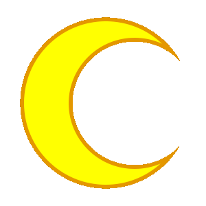
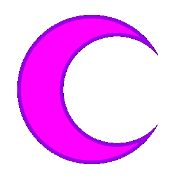
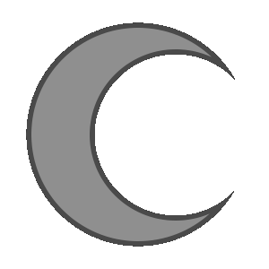

<!DOCTYPE html>
<html>
<head>
  <meta charset="UTF-8" />
  <meta name="viewport" content="width=device-width, initial-scale=1">
  <title>The Session Scryer</title>
  <meta name="robots" content="noindex" />

  <!-- Favicon -->
  <link rel="icon" type="image/png" href="./images/logos/ScryerLogoRegular.png" />

  <!-- React 18 -->
  <script crossorigin src="https://unpkg.com/react@18/umd/react.development.js"></script>
  <script crossorigin src="https://unpkg.com/react-dom@18/umd/react-dom.development.js"></script>

  <!-- Babel -->
  <script src="https://unpkg.com/@babel/standalone/babel.min.js"></script>

  <!-- Tailwind -->
  <script src="https://cdn.tailwindcss.com"></script>

  <!-- Scryer chrome styles — paired with components/scrying-{ball,interior}.js
       loaded near the bottom of <body>. The ball CSS keys off body classes
       (scrolling/stamping/.../inside) which the component toggles during
       the dive animation; the interior CSS styles the pentagon backdrop. -->
  <link rel="stylesheet" href="./components/scrying-ball.css">
  <link rel="stylesheet" href="./components/scrying-interior.css">

  <style>
    /* Local copies of the Classpect Connector's display fonts, mirrored
       into session-prototype/fonts/ so the prototype is self-contained
       (no parent-directory traversal at runtime). When CC updates a
       font, just re-copy the file.

       — Typostuck: title-case classpect names (used by the in-card
         ClasspectLink). Same family the main site uses.
       — Carima:    decorative display face used elsewhere on CC
         (e.g. the PROSPIT/DERSE banners). Wired in here too so we
         can drop it into future moon-themed flourishes without
         needing to re-touch this block. */
    @font-face {
      font-family: 'Typostuck';
      src: url('./fonts/TYPOSTUCK.ttf') format('truetype');
      font-display: swap;
    }
    @font-face {
      font-family: 'Carima';
      src: url('./fonts/Carima-Regular.ttf') format('truetype');
      font-display: swap;
    }
    .font-carima { font-family: 'Carima', Verdana, serif; }

    :root {
      --moon-prospit: #ffd66b;
      --moon-derse:   #9a7ad8;
      --orb-border:   rgba(255,255,255,0.18);
      --orb-bg:       rgba(255,255,255,0.035);
      --text-dim:     #888;
      --text-faint:   #555;
      --cc-link-color:       #ffffff;        /* class word, dark theme */
      --cc-link-hover-color: #6dd1f4;        /* hover, dark theme */
    }
    body { background-color: #1a1a1a; color: #eee; font-family: 'Courier New', monospace; }
    .panel { background-color: #2a2a2a; border: 1px solid #444; border-radius: 6px; padding: 14px; }
    .panel h2 { font-weight: bold; margin-bottom: 8px; color: #6dd1f4; }


    /* ---- Entry-mode tabs ---- */
    .entry-tabs {
      display: flex;
      gap: 0;
      justify-content: center;
      width: fit-content;
      max-width: 100%;
      margin: 0 auto 12px;
      border: 1px solid #444;
      border-radius: 6px;
      overflow: hidden;
      background-color: #2a2a2a;
    }
    .entry-tab {
      flex: 0 0 auto;
      padding: 8px 22px;
      font-size: 13px;
      letter-spacing: 1px;
      text-transform: uppercase;
      color: var(--text-dim);
      background: transparent;
      border: none;
      border-right: 1px solid #444;
      cursor: pointer;
      transition: background 0.15s, color 0.15s;
    }
    .entry-tab:last-child { border-right: none; }
    .entry-tab:hover { color: #e4e4e4; background: rgba(255,255,255,0.04); }
    .entry-tab.active {
      color: #6dd1f4;
      background: rgba(109,209,244,0.08);
      box-shadow: inset 0 -2px 0 #6dd1f4;
    }

    /* Entry body: the active mode's content + the members list side by
       side. On mobile they stack (one column). */
    .entry-body {
      display: grid;
      grid-template-columns: 2fr 1fr;
      gap: 16px;
      align-items: start;
    }
    @media (max-width: 720px) {
      .entry-body { grid-template-columns: 1fr; }
    }
    .entry-active-panel { min-width: 0; }   /* let textarea/grid shrink */
    .entry-active-panel .panel { overflow-x: auto; }

    .entry-stage {
      transition: transform 0.55s cubic-bezier(0.22, 0.9, 0.3, 1.05),
                  opacity   0.45s ease-out;
      will-change: transform, opacity;
    }
    body.scrolling .entry-stage,
    body.stamping  .entry-stage,
    body.flashing  .entry-stage,
    body.opening   .entry-stage,
    body.diving    .entry-stage,
    body.arriving  .entry-stage,
    body.inside    .entry-stage {
      transform: translateY(-32vh);
      opacity: 0;
      pointer-events: none;
    }

    .app-chrome {
      transition: opacity 0.4s ease-out;
    }
    body.scrolling .app-chrome,
    body.stamping  .app-chrome,
    body.flashing  .app-chrome,
    body.opening   .app-chrome,
    body.diving    .app-chrome,
    body.arriving  .app-chrome {
      opacity: 0;
      pointer-events: none;
    }

    .inside-stage {
      animation: inside-stage-enter 0.55s cubic-bezier(0.22, 0.9, 0.3, 1.05) both;
    }
    @keyframes inside-stage-enter {
      from { opacity: 0; transform: scale(0.95) translateY(8px); }
      to   { opacity: 1; transform: scale(1)    translateY(0);   }
    }

    .outside-bg {
      position: fixed;
      inset: 0;
      z-index: -3;
      pointer-events: none;
      background: radial-gradient(ellipse at center, #0a0a12 0%, #050509 70%, #000 100%);
      opacity: 0;
      transition: opacity 0.6s ease-out;
    }
    body.scrolling .outside-bg,
    body.stamping  .outside-bg,
    body.flashing  .outside-bg,
    body.opening   .outside-bg,
    body.diving    .outside-bg {
      opacity: 1;
    }
    .outside-bg::before {
      content: "";
      position: absolute;
      inset: 0;
      opacity: 0.85;
      background-image:
        radial-gradient(1.5px 1.5px at 10% 18%, #fff, transparent),
        radial-gradient(1.5px 1.5px at 23% 45%, #dbeafe, transparent),
        radial-gradient(1.5px 1.5px at 31% 77%, #fff, transparent),
        radial-gradient(1.5px 1.5px at 44% 12%, #fff, transparent),
        radial-gradient(1.5px 1.5px at 55% 63%, #c7d2fe, transparent),
        radial-gradient(1.5px 1.5px at 67% 28%, #fff, transparent),
        radial-gradient(1.5px 1.5px at 72% 81%, #fff, transparent),
        radial-gradient(1.5px 1.5px at 84% 40%, #e0e7ff, transparent),
        radial-gradient(1.5px 1.5px at 91% 67%, #fff, transparent),
        radial-gradient(2.5px 2.5px at 18% 92%, #fff, transparent),
        radial-gradient(1.5px 1.5px at 47% 34%, #fff, transparent),
        radial-gradient(1.5px 1.5px at 61% 88%, #c7d2fe, transparent),
        radial-gradient(1.5px 1.5px at  8% 70%, #fff, transparent),
        radial-gradient(1.5px 1.5px at 38% 55%, #fff, transparent),
        radial-gradient(1.5px 1.5px at 79% 14%, #fff, transparent),
        radial-gradient(2px 2px at 14% 38%, #fff, transparent),
        radial-gradient(2px 2px at 86% 22%, #fff, transparent),
        radial-gradient(2px 2px at 51% 5%,  #fff, transparent),
        radial-gradient(2px 2px at  3% 50%, #fff, transparent),
        radial-gradient(2px 2px at 96% 88%, #fff, transparent),
        radial-gradient(1px 1px at 5%  10%, #fff, transparent),
        radial-gradient(1px 1px at 15% 25%, #fff, transparent),
        radial-gradient(1px 1px at 28% 8%,  #fff, transparent),
        radial-gradient(1px 1px at 36% 30%, #fff, transparent),
        radial-gradient(1px 1px at 42% 65%, #fff, transparent),
        radial-gradient(1px 1px at 48% 48%, #fff, transparent),
        radial-gradient(1px 1px at 56% 18%, #fff, transparent),
        radial-gradient(1px 1px at 63% 72%, #fff, transparent),
        radial-gradient(1px 1px at 70% 50%, #fff, transparent),
        radial-gradient(1px 1px at 75% 36%, #fff, transparent),
        radial-gradient(1px 1px at 82% 60%, #fff, transparent),
        radial-gradient(1px 1px at 88% 8%,  #fff, transparent),
        radial-gradient(1px 1px at 93% 30%, #fff, transparent),
        radial-gradient(1px 1px at 11% 60%, #fff, transparent),
        radial-gradient(1px 1px at 19% 75%, #fff, transparent),
        radial-gradient(1px 1px at 26% 92%, #fff, transparent),
        radial-gradient(1px 1px at 33% 18%, #fff, transparent),
        radial-gradient(1px 1px at 40% 85%, #fff, transparent),
        radial-gradient(1px 1px at 49% 78%, #fff, transparent),
        radial-gradient(1px 1px at 58% 42%, #fff, transparent),
        radial-gradient(1px 1px at 66% 12%, #fff, transparent),
        radial-gradient(1px 1px at 73% 95%, #fff, transparent),
        radial-gradient(1px 1px at 80% 75%, #fff, transparent),
        radial-gradient(1px 1px at 89% 50%, #fff, transparent),
        radial-gradient(1px 1px at 97% 12%, #fff, transparent);
      background-size: 100% 100%;
    }
    body.arriving .outside-bg,
    body.inside   .outside-bg {
      opacity: 0;
    }

    .inside-bg {
      position: fixed;
      inset: 0;
      z-index: -2;
      pointer-events: none;
      overflow: hidden;
      opacity: 0;
      transition: opacity 0.7s ease-in;
    }

    .bg-overlay {
      position: fixed;
      inset: 0;
      z-index: -1;
      pointer-events: none;
      background: rgba(0, 0, 0, 0.33);
      opacity: 0;
      transition: opacity 0.6s ease-out;
    }
    body.scrolling .bg-overlay,
    body.stamping  .bg-overlay,
    body.flashing  .bg-overlay,
    body.opening   .bg-overlay,
    body.diving    .bg-overlay,
    body.arriving  .bg-overlay,
    body.inside    .bg-overlay {
      opacity: 1;
    }
    /* Visible only once the ball has "arrived" — pairs with .outside-bg
       fading out, so the swap reads as crossing the threshold. */
    body.arriving .inside-bg,
    body.inside   .inside-bg {
      opacity: 1;
    }
    .inside-bg-layer {
      position: absolute;
      top: -10vh; left: -10vw;
      right: -10vw; bottom: -10vh;
      background-position: center center;
      background-size: cover;
      background-repeat: no-repeat;
      will-change: transform;
    }
    /* Desktop assets. Each layer slot is themed by file (back→front). */
    .inside-bg-1 { background-image: url('./images/bg/pc/PC-Interior-1.png'); }
    .inside-bg-2 { background-image: url('./images/bg/pc/PC-Interior-2.png'); }
    .inside-bg-3 { background-image: url('./images/bg/pc/PC-Interior-3.png'); }
    .inside-bg-4 { background-image: url('./images/bg/pc/PC-Interior-4.png'); }
    /* Mobile assets — painted at portrait dimensions for narrow screens
       where the desktop landscape art would crop awkwardly. */
    @media (max-width: 720px) {
      .inside-bg-1 { background-image: url('./images/bg/mobile/Mobile_Interior-1.png'); }
      .inside-bg-2 { background-image: url('./images/bg/mobile/Mobile_Interior-2.png'); }
      .inside-bg-3 { background-image: url('./images/bg/mobile/Mobile_Interior-3.png'); }
      .inside-bg-4 { background-image: url('./images/bg/mobile/Mobile_Interior-4.png'); }
    }

    /* ---- Phase C: SCRY / ABSCOND frame-transition buttons ---- */
    .scry-btn-row {
      display: flex;
      justify-content: center;
      margin: 22px 0 4px;
    }
    .scry-btn {
      display: inline-flex;
      align-items: center;
      justify-content: center;
      min-width: 240px;
      padding: 14px 40px;
      background: linear-gradient(180deg, #234fbf 0%, #1a3a8e 100%);
      border: 1px solid #4a78d8;
      border-radius: 4px;
      color: #f4f8ff;
      font-family: 'Typostuck', 'Courier New', monospace;
      font-size: 22px;
      font-weight: normal;
      letter-spacing: 4px;
      text-transform: uppercase;
      cursor: pointer;
      box-shadow:
        0 0 12px rgba(80, 130, 240, 0.45),
        0 2px 6px rgba(0, 0, 0, 0.5);
      transition: background 0.15s, box-shadow 0.15s, transform 0.1s;
    }
    .scry-btn:hover:not(:disabled) {
      background: linear-gradient(180deg, #3060d8 0%, #234fbf 100%);
      box-shadow:
        0 0 20px rgba(100, 160, 255, 0.65),
        0 3px 10px rgba(0, 0, 0, 0.6);
    }
    .scry-btn:active:not(:disabled) { transform: translateY(1px); }
    .scry-btn:disabled {
      opacity: 0.45;
      cursor: not-allowed;
      box-shadow: 0 2px 4px rgba(0, 0, 0, 0.4);
    }

    .abscond-row {
      display: flex;
      justify-content: flex-start;
      margin: 0 0 14px;
    }
    .abscond-btn {
      padding: 8px 18px;
      background: transparent;
      border: 1px solid rgba(180, 200, 240, 0.45);
      border-radius: 4px;
      color: #b8c8e8;
      /* Header phase 4: Typostuck face matching SCRY — keeps the
         two transition buttons in the same brand voice even though
         their visual weight differs (SCRY is primary, ABSCOND is
         subtle outline). */
      font-family: 'Typostuck', 'Courier New', monospace;
      font-size: 16px;
      letter-spacing: 3px;
      text-transform: uppercase;
      cursor: pointer;
      transition: background 0.15s, color 0.15s, border-color 0.15s;
    }
    .abscond-btn:hover {
      background: rgba(80, 130, 240, 0.12);
      color: #f4f8ff;
      border-color: rgba(180, 200, 240, 0.85);
    }

    /* ---- Section divider between entry and results sections ---- */
    .results-divider {
      text-align: center;
      letter-spacing: 6px;
      font-size: 11px;
      color: var(--text-dim);
      margin: 28px 0 16px;
      text-transform: uppercase;
      position: relative;
    }
    .results-divider::before,
    .results-divider::after {
      content: '';
      position: absolute;
      top: 50%;
      width: 35%;
      height: 1px;
      background: rgba(255,255,255,0.12);
    }
    .results-divider::before { left: 0; }
    .results-divider::after  { right: 0; }
    .moon-btn { width: 36px; height: 36px; border-radius: 50%; border: 2px solid transparent; cursor: pointer; }
    .moon-btn.active { border-color: #fff; box-shadow: 0 0 6px rgba(255,255,255,0.6); }
    textarea { background-color: #111; color: #eee; border: 1px solid #444; padding: 8px; font-family: inherit; }
    input[type=text] { background-color: #111; color: #eee; border: 1px solid #444; padding: 6px; font-family: inherit; }
    .err { color: #ff6b6b; }
    .ok  { color: #6bff6b; }

    /* ================================================================
       SCRYING VIEW — inverted-U orb layout around the session grid.
       Ported from entry-mockup.html. Orbs and cards show real
       computed values from the React stats engine.
       ================================================================ */
    .scrying-scene {
      display: grid;
      grid-template-columns: 200px 1fr 200px;
      /* Six content rows:
           top        : top-row orbs (TL · TC · TR)
           code       : session-code header (copy + share-link)
           grid       : side orbs flank the grid-host
           grid       : (same row, mid-side orbs flank)
           toggles    : Underlay controls (moved from above to below
                        the graph per user feedback)
           controls   : SAVE/COPY buttons (centered)
           lunar      : Prospit + Derse moon/card groups; given a
                        minmax(180px,…) MIN HEIGHT so the pentagon's
                        bottom V always has somewhere to glow even
                        when no luna data exists, preventing it
                        from reaching down into the Further Omens
                        section that follows the scene. */
      grid-template-rows: auto auto auto 1fr auto auto minmax(180px, auto);
      grid-template-areas:
        ".     top      .  "
        ".     code     .  "
        "ul    grid     ur "
        "ml    grid     mr "
        ".     toggles  .  "
        ".     controls .  "
        "lunar lunar    lunar";
      column-gap: 20px;
      row-gap: 18px;
      width: 100%;
      max-width: 1280px;
      min-width: 800px;
      margin: 0 auto;
      padding: 20px 0;
      overflow: visible;
    }
    .scrying-scene-has-pentagon { position: relative; }
    .scrying-scene-has-pentagon > .ss-top-row,
    .scrying-scene-has-pentagon > .orb,
    .scrying-scene-has-pentagon > .scry-code-header,
    .scrying-scene-has-pentagon > .grid-toggles-above,
    .scrying-scene-has-pentagon > .grid-host > .overflow-x-auto,
    .scrying-scene-has-pentagon > .grid-controls,
    .scrying-scene-has-pentagon > .ss-lunar-zone {
      position: relative;
      z-index: 1;
    }
    .scrying-scene-has-pentagon > .scry-code-header  { margin-bottom: -18px; }
    .scrying-scene-has-pentagon > .grid-toggles-above { margin-top: -22px; }
    .scrying-scene-has-pentagon > .grid-controls      { margin-top: -14px;  }
    /* Scene chrome organized into THREE bands:
         .scry-code-header    — session code + copy/share-link buttons,
                                ABOVE the graph (in the `code` row)
         .grid-toggles-above  — Underlay toggles + legend, now BELOW
                                the graph (in the `toggles` row) per
                                v6 reshuffle (was above the graph in
                                v4; moved to recover that space for
                                the session-code header).
         .grid-controls       — SAVE/COPY buttons, CENTERED beneath
                                the toggles in the `controls` row. */
    .scry-code-header {
      grid-area: code;
      display: flex;
      flex-direction: column;
      align-items: center;
      gap: 4px;
      padding: 2px 14px;
      font-family: 'Courier New', monospace;
      min-width: 0;
    }
    .scry-code-header .scc-label {
      font-size: 10px;
      letter-spacing: 3px;
      text-transform: uppercase;
      color: #b8c8e8;
      flex: 0 0 auto;
    }
    .scry-code-header .scc-code {
      font-weight: bold;
      color: #f8f8f8;
      padding: 6px 14px;
      background: rgba(0, 0, 0, 0.35);
      border: 1px solid rgba(160, 200, 255, 0.30);
      border-radius: 3px;
      user-select: all;
      cursor: text;
      min-width: 0;
      max-width: 100%;
      overflow-wrap: anywhere;
      text-align: center;
    }
    .scry-code-header .scc-button-row {
      display: flex;
      align-items: center;
      justify-content: center;
      gap: 10px;
    }

    .grid-toggles-above {
      grid-area: toggles;
      display: flex;
      flex-wrap: wrap;
      gap: 14px;
      align-items: center;
      justify-content: center;
      padding: 6px 10px;
      font-family: 'Courier New', monospace;
      font-size: 11px;
      letter-spacing: 0.4px;
      color: #e4e4e4;
    }
    .grid-toggles-above .grid-toggle-label { color: #b8c8e8; }
    .grid-toggles-above .grid-toggle:hover { color: #ffffff; }
    .grid-toggles-above .legend-stop { color: #ffffff; }
    .grid-controls {
      grid-area: controls;
      display: flex;
      flex-wrap: wrap;
      gap: 14px;
      align-items: center;
      justify-content: center;
      padding: 6px 10px;
      font-family: 'Courier New', monospace;
      font-size: 11px;
      letter-spacing: 0.4px;
      color: var(--text-dim);
    }
    .grid-toggle-group {
      display: flex;
      align-items: center;
      gap: 10px;
      flex-wrap: wrap;
    }
    .grid-toggle-label {
      text-transform: uppercase;
      letter-spacing: 2px;
      color: var(--text-faint);
      font-size: 9px;
    }
    .grid-toggle {
      display: inline-flex;
      align-items: center;
      gap: 5px;
      cursor: pointer;
      user-select: none;
      transition: color 0.15s;
    }
    .grid-toggle:hover { color: #f8f8f8; }
    .grid-toggle input[type="checkbox"] {
      accent-color: #6dd1f4;
      cursor: pointer;
      margin: 0;
    }
    .grid-toggle-legend {
      display: inline-flex;
      align-items: center;
      gap: 4px;
      margin-left: 4px;
    }
    .grid-toggle-legend .legend-stop {
      font-size: 14px;
      font-weight: bold;
      width: 11px;
      text-align: center;
      color: #ffffff;
      line-height: 1;
    }
    .grid-toggle-legend .legend-gradient {
      display: inline-block;
      width: 56px;
      height: 8px;
      border: 1px solid rgba(255,255,255,0.18);
      background: linear-gradient(to right,
        #14025a 0%,    /* purple   (t=-1) */
        #782c92 25%,   /* magenta  (t=-0.5) */
        #160a1e 50%,   /* near-blk (t=0)    */
        #dcb464 75%,   /* amber    (t=+0.5) */
        #faf06e 100%); /* yellow   (t=+1)   */
    }
    .grid-save-btn {
      display: inline-flex;
      align-items: center;
      gap: 6px;
      padding: 7px 14px;
      background: #f4f4f4;
      border: 1px solid rgba(0, 0, 0, 0.25);
      border-radius: 3px;
      color: #1a1a1a;
      font-family: 'Courier New', monospace;
      font-size: 11px;
      letter-spacing: 1.5px;
      text-transform: uppercase;
      cursor: pointer;
      box-shadow: 0 2px 6px rgba(0, 0, 0, 0.35);
      transition: background 0.15s, border-color 0.15s, color 0.15s, box-shadow 0.15s;
    }
    .grid-save-btn:hover:not(:disabled) {
      background: #ffffff;
      border-color: rgba(0, 0, 0, 0.5);
      color: #000;
      box-shadow: 0 3px 10px rgba(109, 209, 244, 0.35);
    }
    .grid-save-btn:disabled { opacity: 0.55; cursor: default; }
    .grid-save-status {
      margin-left: 6px;
      color: #6dd1f4;
      text-transform: none;
      letter-spacing: 0.4px;
      font-family: 'Courier New', monospace;
      font-size: 10px;
    }
    .grid-export-group {
      display: inline-flex;
      align-items: center;
      gap: 8px;
      flex-wrap: wrap;
    }
    .ss-top-row {
      grid-area: top;
      display: flex;
      justify-content: space-between;
      align-items: center;
      gap: 20px;
    }
    .ss-lunar-zone {
      grid-area: lunar;
      display: flex;
      justify-content: center;
      align-items: flex-start;
      gap: 36px;
      padding: 0 20px;
    }
    .lunar-group {
      display: flex;
      flex-direction: column;
      align-items: center;
      gap: 10px;
      flex: 1 1 0;
      max-width: 480px;
    }

    /* Central grid host: wraps the live SessionGrid SVG.
       Sized so the SVG (550x430 viewBox) renders ~620x484 px — bigger
       than before so the new larger pixel-art icons (players, lunar
       centers, session center) read clearly.
       The horizontal gutter to the side orbs keeps them off the grid. */
    .grid-host {
      grid-area: grid;
      position: relative;          /* positioning context for hover-card overlays */
      justify-self: center;        /* center in the flex column */
      align-self: center;
      width: 640px;
      max-width: 100%;
      padding: 10px;
      background: transparent;
      border: none;
    }

    .orb {
      width: 150px;
      height: 150px;
      border-radius: 50%;
      background: #f8f8f8;
      border: 1px solid rgba(60, 50, 40, 0.45);
      display: grid;
      place-items: center;
      text-align: center;
      padding: 10px;
      backdrop-filter: blur(4px);
      box-shadow:
        inset 0 -6px 18px rgba(120, 100, 70, 0.18),
        inset 0 4px 12px rgba(255, 255, 240, 0.4),
        0 10px 30px rgba(0, 0, 0, 0.6);
      transition: background 0.2s, border-color 0.2s, box-shadow 0.2s, scale 0.2s;
    }
    .orb.clickable { cursor: pointer; }
    .orb.pinned {
      border-color: rgba(109, 209, 244, 0.85);
      box-shadow:
        inset 0 -6px 18px rgba(120, 100, 70, 0.18),
        inset 0 4px 12px rgba(255, 255, 240, 0.55),
        0 0 0 2px rgba(109, 209, 244, 0.55),
        0 10px 30px rgba(0, 0, 0, 0.65),
        0 0 40px rgba(109, 209, 244, 0.25);
    }
    .orb:hover {
      background: #f8f8f8;
      border-color: rgba(60, 50, 40, 0.7);
      scale: 1.04;
      box-shadow:
        inset 0 -6px 18px rgba(120, 100, 70, 0.18),
        inset 0 4px 12px rgba(255, 255, 240, 0.55),
        0 0 40px rgba(255, 255, 240, 0.18);
      z-index: 5;
    }
    .orb .orb-label {
      font-size: 10px;
      letter-spacing: 2.2px;
      color: #5a5040;
      text-transform: uppercase;
      margin-bottom: 6px;
      line-height: 1.2;
    }
    .orb .orb-value {
      font-size: 15px;
      color: #1a1a1a;
      font-weight: bold;
      line-height: 1.25;
    }
    .orb .orb-value.dim { color: #6a5a48; font-weight: normal; }
    .orb .orb-value .quip-lead,
    .orb .orb-value .quip-tail {
      display: block;
      font-size: 11px;
      font-weight: normal;
      color: #5a5040;
      letter-spacing: 0.4px;
      line-height: 1.2;
    }
    .orb .orb-value .quip-lead { margin-bottom: 3px; }
    .orb .orb-value .quip-tail { margin-top: 3px; }
    .orb .orb-value .quip-key {
      display: block;
      font-size: 15px;
      font-weight: bold;
      line-height: 1.2;
    }
    .orb .orb-sub {
      margin-top: 4px;
      font-size: 10px;
      letter-spacing: 1px;
      color: #6a5a48;
      text-transform: uppercase;
    }
    .orb.o-tc {
      width:  100px;
      height: 100px;
      padding: 8px;
      position: relative;
      top: -80px;
    }
    .orb.layer-orb {
      display: grid;
      place-items: center;
      overflow: hidden;
      background: #060816;
      border: 1px solid rgba(120, 160, 255, 0.45);
      box-shadow:
        inset 0 0 18px rgba(20, 30, 80, 0.85),
        0 0 24px rgba(60, 100, 220, 0.30),
        0 10px 30px rgba(0, 0, 0, 0.6);
    }
    .orb.layer-orb:hover {
      background: #0a0e1f;
      border-color: rgba(160, 200, 255, 0.65);
      box-shadow:
        inset 0 0 18px rgba(30, 40, 100, 0.85),
        0 0 36px rgba(80, 130, 240, 0.45),
        0 10px 30px rgba(0, 0, 0, 0.65);
    }
    .orb.layer-orb .layer-orb-img {
      width:  100%;
      height: 100%;
      object-fit: contain;
      image-rendering: pixelated;
    }
    .orb.o-ul { grid-area: ul; justify-self: start; align-self: start;  left:  -20px; top: -60px; }
    .orb.o-ur { grid-area: ur; justify-self: end;   align-self: start;  left:   20px; top: -60px; }
    .orb.o-ml { grid-area: ml; justify-self: start; align-self: center; }
    .orb.o-mr { grid-area: mr; justify-self: end;   align-self: center; }
    .ss-top-row .orb.o-tl,
    .ss-top-row .orb.o-tr {
      position: relative;
      top: -60px;
    }

    /* ===============================================================
       Inside-ball idle motion. Subtle floating bob for each
       orb and moon disc when the user is INSIDE the ball, so the
       scene feels alive rather than frozen. The pentagon backdrop,
       session grid, lunar text cards (readable prose would jitter),
       chrome rows (session-code header, toggles, SAVE/COPY), and the
       "Further Omens" cards below are intentionally NOT animated —
       anchors of the scene the user is reading or interacting with.

       Mechanism: each element gets its OWN keyframe + duration +
       phase offset (negative animation-delay) so the motions never
       sync up. Uses the CSS `translate` individual property (not the
       `transform` shorthand) so it composes with the existing :hover
       transforms — .orb has `scale: 1.04` on hover (individual), and
       .moon-display has `transform: scale(1.05)` on hover (shorthand);
       both compose with `translate:` per CSS Transforms Level 2
       (individual translate/rotate/scale apply BEFORE transform
       shorthand).

       Disabled on the scryer mobile breakpoint (≤900 px, where the
       pentagon is hidden and orbs reflow into a 2×2 grid) and when
       the user has prefers-reduced-motion set. */
    @keyframes orb-bob-a {
      0%, 100% { translate:  0px   0px; }
      50%      { translate:  0px  -7px; }
    }
    @keyframes orb-bob-b {
      0%, 100% { translate:  0px  -2px; }
      50%      { translate:  3px   5px; }
    }
    @keyframes orb-bob-c {
      0%, 100% { translate: -2px   0px; }
      50%      { translate:  2px  -6px; }
    }
    @keyframes orb-bob-d {
      0%, 100% { translate:  2px   2px; }
      50%      { translate: -3px  -5px; }
    }
    @keyframes orb-bob-e {
      0%, 100% { translate:  0px   3px; }
      50%      { translate:  3px  -4px; }
    }
    @keyframes orb-bob-f {
      0%, 100% { translate: -3px   1px; }
      50%      { translate:  2px  -5px; }
    }
    @keyframes orb-bob-g {
      0%, 100% { translate:  2px  -1px; }
      50%      { translate: -3px   6px; }
    }
    @keyframes moon-bob-p {
      0%, 100% { translate:  0px   0px; }
      50%      { translate: -3px  -8px; }
    }
    @keyframes moon-bob-d {
      0%, 100% { translate:  0px  -3px; }
      50%      { translate:  4px   6px; }
    }
    /* Negative animation-delay seeds each
       orb at a different point on its cycle so they're already
       desynchronized on the very first frame inside the ball. */
    body.inside .ss-top-row .orb.o-tl { animation: orb-bob-a 7.2s ease-in-out -0.4s infinite; }
    body.inside .ss-top-row .orb.o-tc { animation: orb-bob-c 6.8s ease-in-out -1.1s infinite; }
    body.inside .ss-top-row .orb.o-tr { animation: orb-bob-b 7.6s ease-in-out -2.3s infinite; }
    body.inside .orb.o-ul             { animation: orb-bob-d 8.1s ease-in-out -0.6s infinite; }
    body.inside .orb.o-ur             { animation: orb-bob-e 7.4s ease-in-out -1.8s infinite; }
    body.inside .orb.o-ml             { animation: orb-bob-f 6.6s ease-in-out -0.2s infinite; }
    body.inside .orb.o-mr             { animation: orb-bob-g 7.9s ease-in-out -1.3s infinite; }
    body.inside .moon-display.prospit { animation: moon-bob-p 8.6s ease-in-out -0.9s infinite; }
    body.inside .moon-display.derse   { animation: moon-bob-d 9.1s ease-in-out -2.1s infinite; }

    @media (prefers-reduced-motion: reduce) {
      body.inside .orb,
      body.inside .moon-display {
        animation: none !important;
      }
    }

    .lunar-moons {
      display: flex;
      justify-content: space-between;
      padding: 0 30px;
      pointer-events: none;
    }
    .moon-display {
      width: 180px;
      height: 180px;
      flex: 0 0 auto;
      display: grid;
      place-items: center;
      text-align: center;
      pointer-events: auto;
      transition: transform 0.2s, opacity 0.2s;
    }
    .moon-display.interactive { cursor: pointer; }
    .moon-display.interactive:hover { transform: scale(1.05); }
    .moon-display.dimmed { opacity: 0.35; }
    .moon-display.focused .moon-disc img {
      filter:
        drop-shadow(0 0 4px rgba(255,255,255,0.85))
        drop-shadow(0 0 12px rgba(255,255,255,0.45));
    }
    .moon-display.focused .moon-name { color: #ffffff; }
    .moon-display .moon-disc {
      width: 140px;
      height: 140px;
      margin: 0 auto 6px;
      position: relative;
      display: grid;
      place-items: center;
    }
    .moon-display .moon-disc img {
      width: 100%;
      height: 100%;
      object-fit: contain;
      image-rendering: pixelated;
    }
    .moon-display .moon-name {
      font-size: 9px;
      letter-spacing: 3px;
      color: var(--text-dim);
      text-transform: uppercase;
    }
    .moon-display .moon-count {
      font-size: 11px;
      color: #e4e4e4;
      font-weight: bold;
      margin-top: 2px;
    }

    .lunar-card {
      flex: 1 1 0;
      max-width: 380px;
      min-width: 0;
      padding: 16px 20px;
      background: #f8f8f8;
      border: 1px solid rgba(60, 50, 40, 0.45);
      border-radius: 5px;
      font-size: 14px;
      letter-spacing: 0.4px;
      color: #1a1a1a;
      line-height: 1.6;
      transition: background 0.2s, border-color 0.2s, opacity 0.2s, box-shadow 0.2s;
      pointer-events: none;
      overflow-wrap: break-word;
      word-break: break-word;
    }
    .lunar-card.prospit { border-left:  3px solid var(--moon-prospit); }
    .lunar-card.derse   { border-right: 3px solid var(--moon-derse); }
    .lunar-card .lunar-card-head {
      font-size: 14px;
      color: #1a1a1a;
      margin-bottom: 8px;
      padding-bottom: 8px;
      border-bottom: 1px solid rgba(60, 50, 40, 0.18);
    }
    .lunar-card .lunar-card-head .kingdom {
      font-weight: bold;
    }
    /* Kingdom names use darker variants of the moon colors so they
       read on the parchment background. */
    .lunar-card.prospit .lunar-card-head .kingdom { color: #a07810; }
    .lunar-card.derse   .lunar-card-head .kingdom { color: #4a2a72; }
    .lunar-card .lunar-card-line { margin: 6px 0; }
    .lunar-card .lunar-card-line .v { color: #000000; font-weight: bold; }
    .lunar-card .lunar-card-line .reaction { color: #6a5a48; font-style: italic; }
    .lunar-card.dimmed   { opacity: 0.45; }
    .lunar-card.active   { background: #f8f8f8; border-color: rgba(60, 50, 40, 0.7); box-shadow: 0 0 18px rgba(255,255,255,0.12); }
    .lunar-card.active .lunar-card-head { filter: brightness(1.05); }

    .section-divider {
      text-align: center;
      font-size: 10px;
      letter-spacing: 6px;
      color: var(--text-faint);
      margin: 40px 0 32px;
      text-transform: uppercase;
      position: relative;
    }
    .section-divider::before,
    .section-divider::after {
      content: '';
      position: absolute;
      top: 50%;
      width: 80px;
      height: 1px;
      background: rgba(255,255,255,0.1);
    }
    .section-divider::before { right: calc(50% + 120px); }
    .section-divider::after  { left:  calc(50% + 120px); }

    .scry-card-grid {
      display: grid;
      grid-template-columns: repeat(auto-fit, minmax(240px, 1fr));
      align-items: start;
      gap: 16px;
      max-width: 1080px;
      margin: 0 auto;
    }
    .scry-card {
      background: #f8f8f8;
      border: 1px solid rgba(60, 50, 40, 0.45);
      padding: 18px;
      display: flex;
      flex-direction: column;
      gap: 8px;
      transition: all 0.2s;
      position: relative;
      color: #1a1a1a;
    }
    .scry-card::before {
      content: '';
      position: absolute;
      top: -1px; left: -1px;
      width: 10px; height: 10px;
      border-top:  1px solid rgba(60, 50, 40, 0.65);
      border-left: 1px solid rgba(60, 50, 40, 0.65);
    }
    .scry-card:hover {
      background: #f8f8f8;
      border-color: rgba(60, 50, 40, 0.7);
    }
    .scry-card .card-label {
      font-size: 11px;
      letter-spacing: 2px;
      color: #5a5040;
      text-transform: uppercase;
    }
    .scry-card .card-value {
      font-size: 17px;
      color: #1a1a1a;
      font-weight: bold;
    }
    .scry-card .card-value.dim { color: #6a5a48; font-weight: normal; }
    .scry-card .card-value .quip-lead,
    .scry-card .card-value .quip-tail {
      font-size: 14px;
      font-weight: normal;
      color: #4a4030;
      letter-spacing: 0.2px;
    }
    .scry-card .card-value .quip-key {
      font-weight: bold;
    }
    .scry-card .card-value .card-ranking {
      margin-top: 12px;
      padding-top: 10px;
      border-top: 1px solid rgba(60, 50, 40, 0.18);
      font-size: 12px;
      font-weight: normal;
      color: #2a2a2a;
      display: flex;
      flex-direction: column;
      gap: 4px;
    }
    .scry-card .card-value .card-ranking .rank-row {
      display: flex;
      gap: 10px;
      align-items: baseline;
    }
    .scry-card .card-value .card-ranking .rank-num {
      color: #6a5a48;
      width: 16px;
      flex-shrink: 0;
      font-family: 'Courier New', monospace;
    }
    .scry-card .card-value .card-ranking .rank-name {
      flex: 1;
      min-width: 0;
    }
    .scry-card .card-value .card-ranking .rank-dupe {
      margin-left: 4px;
      color: #6a5a48;
      font-family: 'Courier New', monospace;
      font-size: 0.95em;
    }
    .scry-card .card-value .card-ranking .rank-score {
      font-family: 'Courier New', monospace;
      color: #5a5040;
      white-space: nowrap;
    }
    /* Score side-tints darkened for parchment readability. */
    .scry-card .card-value .card-ranking .rank-row.implicit .rank-score { color: #8a6810; font-weight: bold; }
    .scry-card .card-value .card-ranking .rank-row.explicit .rank-score { color: #4a2a72; font-weight: bold; }
    .scry-card .card-value .card-ranking .rank-row.balanced .rank-score { color: #6a5a48; }
    .scry-card .card-note {
      font-size: 12px;
      color: #6a5a48;
      margin-top: auto;
    }

    /* ---- Orb hover-card ---- */
    .orb-hover-card {
      position: absolute;
      top: 50%;
      left: 50%;
      transform: translate(-50%, -50%);
      width: 600px;
      max-width: 95%;
      padding: 20px 24px;
      background: #f8f8f8;
      border: 1px solid rgba(60, 50, 40, 0.45);
      border-radius: 6px;
      box-shadow:
        0 0 50px rgba(100, 140, 255, 0.18),
        inset 0 0 30px rgba(180, 160, 130, 0.18);
      pointer-events: none;
      z-index: 4;
      font-family: 'Courier New', monospace;
      color: #1a1a1a;
      animation: orb-hover-fade 0.18s ease-out;
    }
    @keyframes orb-hover-fade {
      from { opacity: 0; transform: translate(-50%, -50%) scale(0.96); }
      to   { opacity: 1; transform: translate(-50%, -50%) scale(1);    }
    }
    .orb-hover-card .ohc-label {
      font-size: 11px;
      letter-spacing: 2.5px;
      text-transform: uppercase;
      color: #5a5040;
      margin-bottom: 10px;
    }
    .orb-hover-card .ohc-quip {
      font-size: 16px;
      line-height: 1.5;
      margin-bottom: 14px;
      color: #2a2a2a;
    }
    .orb-hover-card .ohc-quip .ohc-key {
      font-weight: bold;
      color: #000000;
    }
    .orb-hover-card .ohc-stats {
      font-size: 12px;
      letter-spacing: 0.4px;
      color: #4a4030;
      line-height: 1.55;
      border-top: 1px solid rgba(60, 50, 40, 0.18);
      padding-top: 10px;
    }
    .orb-hover-card .ohc-stats .ohc-row { display: flex; gap: 6px; }
    .orb-hover-card .ohc-stats .ohc-row .ohc-k {
      flex: 0 0 130px;
      color: #6a5a48;
    }
    .orb-hover-card .ohc-stats .ohc-row .ohc-v {
      color: #1a1a1a;
      flex: 1 1 auto;
      min-width: 0;
    }
    .orb-hover-card .ohc-stats .ohc-pair {
      display: block;
      min-width: 0;
      word-break: break-word;
    }
    .orb-hover-card .ohc-stats .ohc-pair + .ohc-pair {
      margin-top: 4px;
    }
    .orb-hover-card.pinned {
      pointer-events: auto;
      box-shadow:
        0 0 50px rgba(109, 209, 244, 0.30),
        0 0 0 1px rgba(109, 209, 244, 0.50) inset,
        inset 0 0 30px rgba(180, 160, 130, 0.18);
    }
    .orb-hover-card.pinned::after {
      content: 'click orb again or ESC to dismiss';
      display: block;
      margin-top: 14px;
      padding-top: 10px;
      border-top: 1px solid rgba(60, 50, 40, 0.18);
      font-size: 10px;
      color: #6a5a48;
      letter-spacing: 1.5px;
      text-transform: uppercase;
      text-align: right;
    }
    .orb-hover-card .ohc-empty {
      color: #6a5a48;
      font-style: italic;
      font-size: 14px;
    }

    /* ---- CC-style classpect link ---- */
    .cc-classpect-link {
      font-size: 20px;
      letter-spacing: 0.5px;
      text-decoration: none;
      cursor: pointer;
      white-space: nowrap;
      vertical-align: baseline;
    }
    .cc-classpect-link .ccl-class,
    .cc-classpect-link .ccl-aspect,
    .cc-classpect-link .ccl-of,
    .cc-classpect-link .ccl-count {
      font-family: 'Typostuck', 'Courier New', monospace;
      font-size: inherit;
      line-height: 1;
      transition: color 0.15s;
    }
    .cc-classpect-link .ccl-class { color: var(--cc-link-color); }
    .cc-classpect-link .ccl-count {
      color: var(--cc-link-color);
      margin-right: 0.25em;
    }
    .cc-classpect-link .ccl-of {
      color: var(--text-dim);
      margin-inline: 0.35em;
      vertical-align: baseline;
    }
    .cc-classpect-link:hover .ccl-class,
    .cc-classpect-link:hover .ccl-of,
    .cc-classpect-link:hover .ccl-aspect,
    .cc-classpect-link:hover .ccl-count {
      color: var(--cc-link-hover-color);
    }
    /* Variant: Nexus rendered as a single neutral word in Typostuck. */
    .cc-classpect-link.is-nexus {
      font-family: 'Typostuck', 'Courier New', monospace;
      color: var(--cc-link-color);
    }
    .cc-classpect-link.is-nexus:hover {
      color: var(--cc-link-hover-color);
    }
    /* Smaller "in-card" variant for stats lists / lunar cards. */
    .cc-classpect-link.is-small  { font-size: 15px; }
    .cc-classpect-link.is-medium { font-size: 17px; }
    .cc-classpect-link.is-large  { font-size: 26px; letter-spacing: 0.6px; }
    .cc-classpect-link.is-inherit-color .ccl-class,
    .cc-classpect-link.is-inherit-color .ccl-of,
    .cc-classpect-link.is-inherit-color .ccl-aspect,
    .cc-classpect-link.is-inherit-color.is-nexus {
      color: inherit;
    }
    .cc-classpect-link.is-inherit-color:hover {
      opacity: 0.75;
    }
    .orb-hover-card .cc-classpect-link,
    .player-hover-card .cc-classpect-link,
    .scry-card .cc-classpect-link,
    .lunar-card .cc-classpect-link {
      --cc-link-color: #1a1a1a;
    }
    .orb-hover-card .cc-classpect-link .ccl-of,
    .player-hover-card .cc-classpect-link .ccl-of,
    .scry-card .cc-classpect-link .ccl-of,
    .lunar-card .cc-classpect-link .ccl-of {
      color: #5a5040;
    }
    .orb-hover-card .cc-classpect-link:hover .ccl-class,
    .orb-hover-card .cc-classpect-link:hover .ccl-of,
    .player-hover-card .cc-classpect-link:hover .ccl-class,
    .player-hover-card .cc-classpect-link:hover .ccl-of,
    .scry-card .cc-classpect-link:hover .ccl-class,
    .scry-card .cc-classpect-link:hover .ccl-of,
    .lunar-card .cc-classpect-link:hover .ccl-class,
    .lunar-card .cc-classpect-link:hover .ccl-of {
      color: #1a6a8a;     /* darker cyan for the parchment hover state */
    }

    /* ---- Per-player hover card ---- */
    .player-hover-card {
      position: absolute;
      top: 50%;
      transform: translateY(-50%);
      padding: 18px 20px;
      min-width: 340px;
      background: #f8f8f8;
      border: 1px solid rgba(60, 50, 40, 0.45);
      border-radius: 6px;
      box-shadow:
        0 0 50px rgba(100, 140, 255, 0.18),
        inset 0 0 30px rgba(180, 160, 130, 0.18);
      z-index: 6;          /* above orb-hover-card (4) so pin always wins */
      font-family: 'Courier New', monospace;
      color: #1a1a1a;
      animation: orb-hover-fade 0.18s ease-out;
    }
    .player-hover-card.side-left  { left: 0;   right: 47%; }
    .player-hover-card.side-right { right: 0;  left: 47%;  }
    /* Moon-tinted left edge stripe so the card reads as "this player". */
    .player-hover-card.moon-prospit { border-left: 3px solid var(--moon-prospit); }
    .player-hover-card.moon-derse   { border-left: 3px solid var(--moon-derse); }
    .player-hover-card.moon-dual {
      border-left: 3px solid var(--moon-prospit);
      border-right: 3px solid var(--moon-derse);
    }
    .player-hover-card.pinned {
      box-shadow:
        0 0 50px rgba(255, 255, 255, 0.18),
        0 0 0 1px rgba(255, 255, 255, 0.35) inset,
        inset 0 0 30px rgba(100, 140, 255, 0.04);
    }
    .player-hover-card .phc-close {
      position: absolute;
      top: 8px;
      right: 10px;
      background: transparent;
      border: 1px solid rgba(60, 50, 40, 0.35);
      color: #5a5040;
      width: 22px;
      height: 22px;
      border-radius: 4px;
      font-size: 14px;
      line-height: 18px;
      cursor: pointer;
      padding: 0;
      transition: color 0.15s, border-color 0.15s, background 0.15s;
    }
    .player-hover-card .phc-close:hover {
      color: #000000;
      border-color: rgba(60, 50, 40, 0.7);
      background: rgba(60, 50, 40, 0.1);
    }
    
    .player-hover-card .phc-head {
      display: flex;
      flex-direction: column;
      align-items: flex-start;
      gap: 4px;
      margin-bottom: 10px;
    }
    
    .player-hover-card .phc-name-line {
      display: inline-flex;
      align-items: center;
      gap: 8px;
      font-size: 22px;
      line-height: 1.1;
    }
    .player-hover-card .phc-title-line {
      display: inline-flex;
      align-items: center;
      gap: 0.35em;
      font-size: 26px;
      line-height: 1;
    }
    
    .player-hover-card .phc-inline-icon {
      height: 1.1em;
      width: 1.1em;
      flex-shrink: 0;
      object-fit: contain;
      vertical-align: middle;
      display: inline-block;
      filter: drop-shadow(0 1px 2px rgba(120, 100, 70, 0.4));
    }
    
    .player-hover-card .phc-aspect-icon.needs-outline {
      filter:
        drop-shadow(0 0 2px rgba(0, 0, 0, 0.85))
        drop-shadow(0 1px 2px rgba(120, 100, 70, 0.4));
    }
    .player-hover-card .phc-moon-icon {
      image-rendering: pixelated;
    }
    
    .player-hover-card .phc-dupe-row {
      display: flex;
      flex-wrap: wrap;
      gap: 0 12px;
      margin-top: 4px;
      font-family: 'Courier New', monospace;
      font-size: 0.9em;
      color: #4a3a2a;
    }
    .player-hover-card .phc-dupe-entry {
      display: inline-flex;
      align-items: center;
      gap: 4px;
      font-weight: bold;
    }
    .player-hover-card .phc-dupe-entry img {
      width: 1.1em;
      height: 1.1em;
      object-fit: contain;
      image-rendering: pixelated;
      filter: drop-shadow(0 1px 2px rgba(120, 100, 70, 0.4));
    }
    
    .player-hover-card .phc-character-symbol {
      width: 1.6em;
      height: 1.6em;
      flex-shrink: 0;
      object-fit: contain;
      vertical-align: middle;
      display: inline-block;
      filter: drop-shadow(0 1px 2px rgba(120, 100, 70, 0.4));
    }
    
    .player-hover-card .phc-stats {
      display: grid;
      grid-template-columns: 1fr;
      row-gap: 4px;
      /* Wave 11b: 11 → 12 for the data-row scale. */
      font-size: 12px;
      letter-spacing: 0.4px;
      color: #4a4030;
      line-height: 1.55;
      border-top: 1px solid rgba(60, 50, 40, 0.18);
      padding-top: 10px;
    }
    .player-hover-card .phc-row { display: flex; gap: 6px; }
    .player-hover-card .phc-row .phc-k {
      flex: 0 0 120px;
      color: #6a5a48;
    }
    
    .player-hover-card .phc-row .phc-v {
      color: #1a1a1a;
      flex: 1 1 auto;
      min-width: 0;
    }
    .player-hover-card .phc-row .phc-v.bright { color: #000000; font-weight: bold; }
    
    .player-hover-card .phc-roles {
      margin-top: 12px;
      display: flex;
      flex-wrap: wrap;
      gap: 6px;
    }
    .player-hover-card .phc-badge {
      font-size: 9px;
      letter-spacing: 1.2px;
      text-transform: uppercase;
      padding: 4px 8px;
      border-radius: 3px;
      border: 1px solid rgba(60, 50, 40, 0.35);
      color: #2a2a2a;
      background: rgba(60, 50, 40, 0.08);
    }
    
    .player-hover-card .phc-badge.implicit {
      color: #8a6810;
      border-color: #b08020;
      background: rgba(255, 214, 107, 0.16);
    }
    .player-hover-card .phc-badge.explicit {
      color: #4a2a72;
      border-color: #5a3a82;
      background: rgba(154, 122, 216, 0.16);
    }
    .player-hover-card .phc-badge.oddest {
      color: #8a4818;
      border-color: #a05030;
      background: rgba(224, 160, 112, 0.16);
    }
    .player-hover-card .phc-badge.knit {
      color: #246a24;
      border-color: #2a8a2a;
      background: rgba(107, 255, 107, 0.16);
    }

    .player-hover-card .phc-badge.session-center {
      color: #16607a;
      border-color: #2080a0;
      background: rgba(109, 209, 244, 0.16);
    }
    .player-hover-card .phc-badge.lunar-center.prospit {
      color: #8a6810;
      border-color: #b08020;
      background: rgba(255, 214, 107, 0.16);
    }
    .player-hover-card .phc-badge.lunar-center.derse {
      color: #4a2a72;
      border-color: #5a3a82;
      background: rgba(154, 122, 216, 0.16);
    }

    .player-hover-card .phc-far {
      margin-top: 12px;
      font-size: 12px;
      color: #4a4030;
      letter-spacing: 0.4px;
    }
    .player-hover-card .phc-far .phc-far-k {
      color: #6a5a48;
      margin-right: 6px;
    }
    /* Pin hint at the very bottom — only shown when pinned. */
    .player-hover-card .phc-pin-hint {
      margin-top: 12px;
      font-size: 10px;
      color: #6a5a48;
      letter-spacing: 1.5px;
      text-transform: uppercase;
      text-align: right;
    }

    .narrator-text {
      font-weight: normal !important;
      color: #1a1a1a !important;
      letter-spacing: 0.2px;
    }

    @media (max-width: 900px) {
      .orb-hover-card,
      .player-hover-card {
        position: static;
        transform: none;
        width: 100%;
        max-width: 100%;
        min-width: 0;
        margin-top: 0;          /* row-gap on .scrying-scene handles spacing */
        animation: none;        /* desktop fade-in expects translate */
        pointer-events: auto;    /* pin/touch must be interactive */
      }
      .player-hover-card.side-left,
      .player-hover-card.side-right {
        left: auto; right: auto;
      }
      .orb-hover-card:not(.pinned),
      .player-hover-card:not(.pinned) {
        display: none;
      }
    }

    @media (max-width: 900px) {
      .scrying-interior-pentagon { display: none; }
      .scrying-scene-has-pentagon > .scry-code-header,
      .scrying-scene-has-pentagon > .grid-toggles-above,
      .scrying-scene-has-pentagon > .grid-controls {
        margin-top: 0;
        margin-bottom: 0;
      }
      .scrying-scene {
        display: grid;
        grid-template-columns: 1fr 1fr;
        /* Mobile template order is
              code      (Session-Code header, plain dark)
              top       (TL · TC · TR orbs as mini-cards)
              ul / ur   (upper side orbs)
              ml / mr   (mid  side orbs)
              grid      (graph — with the blue band background)
              toggles   (Underlay controls, BELOW the band per user feedback)
              controls  (SAVE/COPY, below toggles)
              pinned    (pinned orb / player card)
              lunar     (Prospit/Derse moons + cards)
           User flow top-to-bottom: code → mini-orbs → graph in band →
           controls outside band → pinned card → moons & cards. */
        grid-template-areas:
          "code     code"
          "top      top"
          "ul       ur"
          "ml       mr"
          "grid     grid"
          "toggles  toggles"
          "controls controls"
          "pinned   pinned"
          "lunar    lunar";
        column-gap: 6px;
        row-gap: 10px;
        grid-template-rows: auto;
        width: 100%;
        max-width: 380px;
        min-width: 0;
        margin: 0 auto;
        padding: 0 4px;
      }
      .scry-code-header {
        padding: 4px 6px;
        gap: 3px;
      }
      .scry-code-header .scc-button-row {
        gap: 6px;
      }
      .grid-host {
        display: contents;
      }
      .grid-host > .overflow-x-auto {
        grid-area: grid;
        width: 100%;
        max-width: none;
        margin-top: 4px;
        background: #000099;
        padding: 10px 8px;
        border-radius: 4px;
        box-shadow:
          0 0 14px rgba(0, 0, 255, 0.55),
          0 0 32px rgba(0, 0, 255, 0.30);
      }
      .grid-host > .orb-hover-card,
      .grid-host > .player-hover-card {
        grid-area: pinned;
      }
      .grid-controls {
        gap: 8px;
        padding: 4px 2px;
        flex-direction: column;
        align-items: stretch;
      }
      .grid-toggle-group { justify-content: center; }
      .grid-save-btn { align-self: center; }
      .grid-export-group {
        justify-content: center;
        width: 100%;
      }
      /* Top row (.ss-top-row) keeps its flex layout — gap tightens
         and the 3 orbs inside flex-share the row evenly. */
      .ss-top-row {
        gap: 6px;
        align-items: stretch;
      }
      .ss-top-row .orb {
        width: auto;
        height: auto;
        min-height: 64px;
        flex: 1 1 0;
        border-radius: 4px;
        padding: 7px 6px;
        box-shadow:
          inset 0 0 12px rgba(255,255,255,0.03),
          0 4px 10px rgba(0,0,0,0.5);
      }
      .ss-top-row .orb.o-tc,
      .ss-top-row .orb.o-tl,
      .ss-top-row .orb.o-tr {
        top: 0;
      }
      .orb.o-ul { left: 0; top: 0; }
      .orb.o-ur { left: 0; top: 0; }
      body.inside .orb,
      body.inside .moon-display {
        animation: none !important;
      }
      /* Side orbs: each lives in its own grid cell (ul/ur/ml/mr);
         stretch to fill, drop the circular pill. */
      .orb.o-ul, .orb.o-ur, .orb.o-ml, .orb.o-mr {
        width: auto;
        height: auto;
        min-height: 64px;
        justify-self: stretch;
        align-self: stretch;
        border-radius: 4px;
        padding: 7px 6px;
        box-shadow:
          inset 0 0 12px rgba(255,255,255,0.03),
          0 4px 10px rgba(0,0,0,0.5);
      }
      .orb .orb-label { font-size: 7px; letter-spacing: 1.5px; margin-bottom: 3px; }
      .orb .orb-value { font-size: 11px; line-height: 1.15; }
      .orb .orb-value .quip-lead,
      .orb .orb-value .quip-tail { font-size: 8px; line-height: 1.15; }
      .orb .orb-value .quip-key  { font-size: 11px; line-height: 1.15; }
      .orb .orb-sub   { font-size: 7px; letter-spacing: 0.5px; margin-top: 2px; }
      .ss-lunar-zone {
        display: grid;
        grid-template-columns: 1fr 1fr;
        grid-template-areas:
          "moon-p moon-d"
          "card-p card-p"
          "card-d card-d";
        column-gap: 6px;
        row-gap: 8px;
        padding: 0;
        justify-items: center;
      }
      .lunar-group {
        display: contents;
        max-width: none;
      }
      .ss-lunar-zone .moon-display.prospit { grid-area: moon-p; }
      .ss-lunar-zone .moon-display.derse   { grid-area: moon-d; }
      .ss-lunar-zone .lunar-card.prospit   { grid-area: card-p; }
      .ss-lunar-zone .lunar-card.derse     { grid-area: card-d; }
      .lunar-card {
        flex: 0 1 auto;
        max-width: 100%;
        width: 100%;
        padding: 8px 10px;
      }
      .moon-display { width: 78px; height: auto; }
      .moon-display .moon-disc { width: 44px; height: 44px; }
      .section-divider::before,
      .section-divider::after { display: none; }
    }

    @media (max-width: 480px) {
      .orb .orb-value { font-size: 10px; }
      .orb .orb-value .quip-lead,
      .orb .orb-value .quip-tail { font-size: 7.5px; }
      .orb .orb-value .quip-key  { font-size: 10px; }
    }
  </style>
</head>

<body>
<div id="root"></div>

<script src="./components/session-constants.js"></script>
<script src="./components/session-mc-tables.js"></script>
<script src="./components/session-parser.js"></script>
<script src="./components/session-stats.js"></script>
<script src="./components/session-selftest.js"></script>
<script src="./components/special-sessions.js"></script>
<!-- React/JSX components -->
<script type="text/babel" src="./components/classpect-link.js"></script>
<script type="text/babel" src="./components/ui-elements.js"></script>
<script type="text/babel" src="./components/entry-widgets.js"></script>
<script type="text/babel" src="./components/session-grid.js"></script>
<script type="text/babel" src="./components/lunar-components.js"></script>
<!-- Scryer chrome -->
<script type="text/babel" src="./components/scrying-ball.js"></script>
<script type="text/babel" src="./components/scrying-interior.js"></script>
<!-- Page-level chrome.-->
<script type="text/babel" src="./components/scryer-header.js"></script>
<script type="text/babel" src="./components/scryer-footer.js"></script>

<script type="text/babel">
const { useState, useMemo, useRef, useEffect } = React;
const { ScryingBall, ScryingInterior, ScryerHeader, ScryerFooter } = window;

/* Per-special-session dive customization. */
function cqDiveRoll() {
  // 4:1 in favor of Hugo (Mind/#00f3cc) over Thorn (Time/#f38400 — his
  // SOUL color, distinct from text color). Re-rolls per
  // SCRY click since the table holds the function, not a cached value.
  return Math.random() < 0.8
    ? { shape: 'mind', flashColor: '#00f3cc' }
    : { shape: 'time', flashColor: '#f38400' };
}
const SPECIAL_DIVE = {
  // Kids — solo. Light glyph in dim-gold, evoking Rose looking through
  // the cueball at a future Sburb event.
  'beta-kids':    { shape: 'light',      flashColor: '#c9b000' },
  'alpha-kids':   { shape: 'light',      flashColor: '#c9b000' },
  // Combined humans & Victory Door — Sburb's own logo in near-black,
  // marking these as the "merged endgame" sessions.
  'all-humans':   { shape: 'sburb',      flashColor: '#0a0a0a' },
  'victory-door': { shape: 'sburb',      flashColor: '#0a0a0a' },
  // Trolls — Vriska's eye, tinted to match the canonical telling.
  // A1 cerulean (Aranea, uninjured Serket); A2 the canonical pure red.
  'dancestors':   { shape: 'vriska-eye', flashColor: '#004182' },
  'beta-trolls':  { shape: 'vriska-eye', flashColor: '#ff0000' },
  // Cherubs — Time gear in Time-red (the Ouroboros echo + Caliborn's
  // Lord of Time fate).
  'cherubs':      { shape: 'time',       flashColor: '#b70d0e' },
  // Just-Caliborn — Time gear too, since Caliborn IS the Lord of Time.
  'caliborn-only': { shape: 'time',      flashColor: '#b70d0e' },
  // Just-Calliope — Space glyph in the canonical Space color.
  'al-only':      { shape: 'space',      flashColor: '#000000' },
  // CounterQuest / STERA — each SCRY rolls between Hugo (4) and
  // Thorn (1). Reflects the asymmetry of how often each is the
  // session's POV figure.
  'cq1':          cqDiveRoll,
  'cq2':          cqDiveRoll,
  'counterquest': cqDiveRoll,

  /* Doom logo in Sburb-green. The Doom shape
     matches the homestuck.com secrets page motif; #4ce24e is the
     canonical Sburb game-loaded green per user spec. Members for
     this session are still pending — entry will deep-link once
     special-sessions.js gets a non-empty member list. */
  'hsod':         { shape: 'doom',  flashColor: '#4ce24e' },
};

/* =========================================================================
   "Oops, All ___!" dive entries
   -------------------------------------------------------------------------
   Programmatically attaches a dive shape + flash color to each of the 26
   "Oops, All X!" sessions generated in special-sessions.js. Reads
   OOPS_CLASS_ASPECT (exposed there as a window global) so the
   class→aspect mapping lives in exactly one place.

   Per user spec:
     - Aspect sessions (oops-all-hope, oops-all-light, …)
         shape = that aspect's symbol; flash = black (#000000).
     - Class sessions (oops-all-witch, oops-all-prince, …)
         shape = sburb logo; flash = associated-aspect color.
         Lord and Muse have no associated aspect — fall back to
         pure black / pure white respectively.
   ========================================================================= */
(function buildOopsDive() {
  const classAspect = (typeof window !== 'undefined') && window.OOPS_CLASS_ASPECT;
  if (!classAspect) {
    console.warn('[scry.html] OOPS_CLASS_ASPECT not loaded — bonus dive entries skipped');
    return;
  }
  // Class sessions → sburb logo, flash = associated-aspect color.
  CLASS_ORDER.forEach(cls => {
    const aspect = classAspect[cls];
    const flashColor =
      aspect           ? ASPECT_LINK_COLORS[aspect] :
      cls === 'Muse'   ? '#ffffff' :   // Muse: white (the inverted twin of Lord's black)
      /* Lord */         '#000000';
    SPECIAL_DIVE[`oops-all-${cls.toLowerCase()}`] = { shape: 'sburb', flashColor };
  });
  // Aspect sessions → that aspect's own shape, flash = black.
  ASPECT_ORDER_ENC.forEach(asp => {
    SPECIAL_DIVE[`oops-all-${asp.toLowerCase()}`] = {
      shape:      asp.toLowerCase(),
      flashColor: '#000000',
    };
  });
})();


function pluralizeClass(cls) {
  if (cls === 'Witch') return 'Witches';
  if (cls === 'Thief') return 'Thieves';
  return cls + 's';
}

function dedupeRanked(ranked) {
  const out = [];
  for (const r of ranked) {
    const last = out[out.length - 1];
    if (last && last.player.class === r.player.class && last.player.aspect === r.player.aspect) {
      last.dupeCount = (last.dupeCount || 1) + 1;
    } else {
      out.push({ ...r, dupeCount: 1 });
    }
  }
  return out;
}

const SelfTestPanel = ({ results }) => {
  const [open, setOpen] = useState(false);
  const fails = results.filter(r => !r.pass).length;
  return (
    <div className="text-xs">
      <button onClick={() => setOpen(!open)} className="underline text-gray-400">
        {open ? 'Hide' : 'Show'} self-test ({fails === 0 ? <span className="ok">{results.length}/{results.length} pass</span> : <span className="err">{fails} fail</span>})
      </button>
      {open && (
        <ul className="mt-2 space-y-1">
          {results.map((r, i) => (
            <li key={i} className={r.pass ? 'ok' : 'err'}>
              {r.pass ? 'PASS' : 'FAIL'}: {r.name}{r.msg ? ` — ${r.msg}` : ''}
            </li>
          ))}
        </ul>
      )}
    </div>
  );
};

/* ================================================================
   SCRYING-VIEW COMPONENTS
   The "scrying scene" is the inverted-U layout: 6 stat orbs ringing
   the top + sides of the live SessionGrid, with the Prospit/Derse
   moons at the open base of the U. Below the scene sits a row of
   "Further Omens" cards (Oddest, Closest Knit, Likeliest Leader).
   All values come from the same compute*() functions that StatsStub
   uses, so the scrying view and classic view stay numerically in sync.
   ================================================================ */

const ResultsView = ({ session, sessionCode = '', gridOverlays, lunarFocus = 'all', onLunarFocus, onLunarHover, focusMoon = null, activeMoon = null, onKnitHover = null, subRep = null, specialContext = null, charLookup = {} }) => {
  const empty = session.length === 0;

  const [gridTintMode, setGridTintMode] = useState('none');
  const gridTintFn = useMemo(() => {
    if (gridTintMode === 'value') {
      // Sum value: classVal + aspectVal, normalized by max magnitude 13.
      return (cv, av) => vanimoColor((cv + av) / 13);
    }
    if (gridTintMode === 'leadership') {
      // Leadership score: classLead + 2·aspectLead, normalized by 19.
      return (cv, av) => {
        const c = CLASS_LEAD_BY_VAL[cv];
        const a = ASPECT_LEAD_BY_VAL[av];
        if (c === undefined || a === undefined) return null;
        return vanimoColor((c + 2 * a) / 19);
      };
    }
    return null;
  }, [gridTintMode]);

  // SVG ref + export status for the "Save PNG" action.
  const svgRef = useRef(null);
  const [exportStatus, setExportStatus] = useState(null);  // null | 'saving' | 'saved' | 'error'

  const prepareSvgForExport = async (svgEl) => {
    const clone = svgEl.cloneNode(true);
    clone.setAttribute('width', '550');
    clone.setAttribute('height', '462');
    const baseUrl = (window.location.origin + window.location.pathname).replace(/\/[^/]*$/, '/');
    const imageEls = Array.from(clone.querySelectorAll('image'));
    await Promise.all(imageEls.map(async (img) => {
      const href = img.getAttribute('href') || img.getAttribute('xlink:href') || '';
      if (!href || href.startsWith('data:')) return;
      const abs = href.startsWith('http') ? href : baseUrl + href.replace(/^\.\//, '');
      try {
        const resp = await fetch(abs);
        const blob = await resp.blob();
        const dataUrl = await new Promise((res) => {
          const reader = new FileReader();
          reader.onload = () => res(reader.result);
          reader.readAsDataURL(blob);
        });
        img.setAttribute('href', dataUrl);
      } catch {
        img.remove();
      }
    }));
    return clone;
  };
  const svgToPngBlob = async (svgEl) => {
    return new Promise(async (resolve, reject) => {
      const cloned = await prepareSvgForExport(svgEl);
      const svgStr = new XMLSerializer().serializeToString(cloned);
      const blob = new Blob([svgStr], { type: 'image/svg+xml;charset=utf-8' });
      const url = URL.createObjectURL(blob);
      const img = new Image();
      img.onload = () => {
        const canvas = document.createElement('canvas');
        canvas.width = 550;
        canvas.height = 462;
        const ctx = canvas.getContext('2d');
        // Scrying-scene grid is dark — fill to match.
        ctx.fillStyle = '#0d0d0d';
        ctx.fillRect(0, 0, canvas.width, canvas.height);
        ctx.drawImage(img, 0, 0);
        URL.revokeObjectURL(url);
        canvas.toBlob(resolve, 'image/png');
      };
      img.onerror = reject;
      img.src = url;
    });
  };
  const exportFilename = () => {
    const tintTag = gridTintMode === 'none' ? '' : `_underlay_${gridTintMode}`;
    return `SESSION_${sessionCode || 'unknown'}${tintTag}.png`;
  };
  const handleSavePng = async () => {
    const svg = svgRef.current;
    if (!svg) {
      setExportStatus('error');
      setTimeout(() => setExportStatus(null), 2500);
      return;
    }
    setExportStatus('saving');
    try {
      const blob = await svgToPngBlob(svg);
      const url = URL.createObjectURL(blob);
      const a = document.createElement('a');
      a.href = url;
      a.download = exportFilename();
      document.body.appendChild(a);
      a.click();
      document.body.removeChild(a);
      setTimeout(() => URL.revokeObjectURL(url), 1500);
      setExportStatus('saved');
    } catch (err) {
      console.error('Save failed:', err);
      setExportStatus('error');
    }
    setTimeout(() => setExportStatus(null), 2500);
  };

  const handleCopyPng = async () => {
    const svg = svgRef.current;
    if (!svg) {
      setExportStatus('error');
      setTimeout(() => setExportStatus(null), 2500);
      return;
    }
    if (!navigator.clipboard?.write || typeof ClipboardItem === 'undefined') {
      setExportStatus('error');
      setTimeout(() => setExportStatus(null), 2500);
      return;
    }
    setExportStatus('copying');
    try {
      const blob = await svgToPngBlob(svg);
      await navigator.clipboard.write([new ClipboardItem({ 'image/png': blob })]);
      setExportStatus('copied');
    } catch (err) {
      console.error('Copy failed:', err);
      setExportStatus('error');
    }
    setTimeout(() => setExportStatus(null), 2500);
  };

  const [hoveredOrb, setHoveredOrb] = useState(null);
  const [pinnedOrb,  setPinnedOrb]  = useState(null);
  const [codeCopied, setCodeCopied] = useState(false);
  const [linkCopied, setLinkCopied] = useState(false);
  const handleCopyCode = () => {
    if (!sessionCode || !navigator.clipboard) return;
    navigator.clipboard.writeText(sessionCode).then(() => {
      setCodeCopied(true);
      setTimeout(() => setCodeCopied(false), 1200);
    });
  };
  const handleCopyLink = () => {
    if (!sessionCode || !navigator.clipboard) return;
    // Share-link is the current URL with the session code in the hash.
    const url = `${window.location.origin}${window.location.pathname}#${sessionCode}`;
    navigator.clipboard.writeText(url).then(() => {
      setLinkCopied(true);
      setTimeout(() => setLinkCopied(false), 1200);
    });
  };
  const handleOrbClick = orbId => {
    setPinnedOrb(prev => prev === orbId ? null : orbId);
  };
  const activeOrb = pinnedOrb ?? hoveredOrb;
  // ESC unpins the orb card (parallel to pinnedPlayerIdx below).
  useEffect(() => {
    if (pinnedOrb === null) return;
    const onKey = e => { if (e.key === 'Escape') setPinnedOrb(null); };
    window.addEventListener('keydown', onKey);
    return () => window.removeEventListener('keydown', onKey);
  }, [pinnedOrb]);

  // Per-player interaction state.
  const [hoveredPlayerIdx, setHoveredPlayerIdx] = useState(null);
  const [pinnedPlayerIdx,  setPinnedPlayerIdx]  = useState(null);
  const handlePlayerClick = idx => {
    setPinnedPlayerIdx(prev => prev === idx ? null : idx);
    // Phantom and player cards are mutually exclusive — clicking a real
    // player dismisses any pinned phantom so we never overlay two cards.
    setPinnedPhantomIdx(null);
  };
  const activePlayerIdx = pinnedPlayerIdx ?? hoveredPlayerIdx;

  const [pinnedPhantomIdx, setPinnedPhantomIdx] = useState(null);
  const handlePhantomClick = idx => {
    setPinnedPhantomIdx(prev => prev === idx ? null : idx);
    // Mutual exclusion with the player + orb cards.
    setPinnedPlayerIdx(null);
    setPinnedOrb(null);
  };

  // ESC closes the pinned player card. No-op when nothing is pinned.
  useEffect(() => {
    if (pinnedPlayerIdx === null) return;
    const onKey = e => { if (e.key === 'Escape') setPinnedPlayerIdx(null); };
    window.addEventListener('keydown', onKey);
    return () => window.removeEventListener('keydown', onKey);
  }, [pinnedPlayerIdx]);

  // ESC closes the pinned phantom card too.
  useEffect(() => {
    if (pinnedPhantomIdx === null) return;
    const onKey = e => { if (e.key === 'Escape') setPinnedPhantomIdx(null); };
    window.addEventListener('keydown', onKey);
    return () => window.removeEventListener('keydown', onKey);
  }, [pinnedPhantomIdx]);

  useEffect(() => {
    window.__cp_focusPlayer = (cls, asp) => {
      const idx = session.findIndex(p => p.class === cls && p.aspect === asp);
      if (idx >= 0) {
        setPinnedPlayerIdx(idx);
        return true;
      }
      return false;
    };
    return () => { delete window.__cp_focusPlayer; };
  }, [session]);

  // Compute every stat once so the orbs and cards share consistent values.
  const bal  = !empty ? computeBalance(session)             : null;
  const cen  = !empty ? computeCentroid(session)            : null;
  const rep  = !empty ? computeRepresentativeRung(session)  : null;
  const ess  = !empty ? computeEssentiality(session)        : null;
  const con  = !empty ? computeConflict(session)            : null;
  const ord  = !empty ? computeOrder(session)               : null;
  const odd  = !empty ? computeOddest(session)              : null;
  const knit = !empty ? computeClosestKnit(session)         : null;
  const lead = !empty ? computeLeaders(session)             : null;
  const luna = !empty ? computeLunarBalance(session)        : null;

  // Color palettes — kept in sync with StatsStub so toggling the view
  // mode doesn't change a stat's color.
  const toneColor = {
    high:    '#1f7a1f',     // dark green   (was bright #6bff6b)
    'mid-hi':'#557a2a',     // olive green  (was light  #a0e07a)
    neutral: '#3a3a3a',     // dark gray    (was white  #f8f8f8 — invisible!)
    'mid-lo':'#9a5020',     // dark amber   (was peach  #e0a070)
    low:     '#a01818'      // dark red     (was bright #e74c3c)
  };
  const conflictToneColor = {
    high:    '#a01818',
    'mid-hi':'#9a5020',
    neutral: '#3a3a3a',
    'mid-lo':'#557a2a',
    low:     '#1f7a1f'
  };
  const balanceColor =
    bal && bal.sum === 0 ? '#1f7a1f' :       // dark green (balanced)
    bal && bal.sum  >  0 ? '#8a6810' :       // dark gold  (passive lean)
    bal                  ? '#a01818' : undefined;  // dark red (active lean)
  // Centroid: non-Nexus rep classpect rendered in dark body text;
  // Nexus stays cyan but darkened so it pops on parchment.
  const centroidColor = cen ? (cen.isNexus ? '#16607a' : '#1a1a1a') : undefined;
  const essColor      = ess && ess.band ? (toneColor[ess.band.tone]         || '#3a3a3a') : undefined;
  const conColor      = con && con.band ? (conflictToneColor[con.band.tone] || '#3a3a3a') : undefined;
  const chaosColor    = ord ? (toneColor[ord.orderBand.tone] || '#3a3a3a') : undefined;

  // ---- Orb display values.

  const toDescriptor = s => (s || '').replace(/[.!?]+$/g, '').toLowerCase();

  // D — Essentiality: descriptor that reads as "...is X to the effort."
  const ESS_OVERRIDES = {
    'Not too important, not too unimportant.': 'neither too important nor too unimportant',
    'of Importance unknown.':                  'of unknown importance'
  };
  const essKey = ess
    ? (ESS_OVERRIDES[ess.label] || toDescriptor(ess.label))
    : null;

  // E — Conflict: descriptor for "Your members are X." 
  const CON_OVERRIDES = {
    'Not in array, nor disarray.': 'neither in array nor disarray',
    'All internal.':               'alone — no conflict to see here',
    'Divided!':                    'divided from each other',
    'Harmonious!':                 'in harmony with one another'
  };
  const conKey = con
    ? (CON_OVERRIDES[con.label] || toDescriptor(con.label))
    : null;

  // Resting-state orb values
  const titleCase = s => s ? s.split(' ').map(w =>
      w.length > 0 ? w[0].toUpperCase() + w.slice(1) : w
    ).join(' ') : s;

  const balValueDefault  = bal ? titleCase(toDescriptor(bal.label)) : null;
  const avaValueDefault  = cen ? cen.label : null;                     // already "Heir of Void"/"Nexus"
  const rungValueDefault = rep ? `#${rep.finalRung} · ${rep.rungName}` : null;
  const essValueDefault  = ess ? titleCase(essKey) : null;
  const conValueDefault  = con ? titleCase(conKey) : null;
  const ordValueDefault  = ord ? ord.cellLabel : null;                 // already title-cased

  // Wave 8b: orb resting-state override helper. When a special-session
  // context is active and the slot has an `orb` override string, swap
  // the descriptor + apply the speaker's text color from characters.json.
  // Falls through to the default value/color when no override exists,
  // so non-special sessions render exactly as before.
  const overrideOrb = (slotKey, defaultValue, defaultColor) => {
    if (!specialContext) return { value: defaultValue, color: defaultColor };
    const slot = specialContext.quips && specialContext.quips[slotKey];
    if (!slot || !slot.orb) return { value: defaultValue, color: defaultColor };
    const speakerData = charLookup[slot.speaker];
    return {
      value: slot.orb,
      color: speakerData ? speakerData.color : defaultColor,
    };
  };

  // Apply orb overrides 
  const balOrb  = overrideOrb('balance',     balValueDefault,  balanceColor);
  const avaOrb  = overrideOrb('avatar',      avaValueDefault,  centroidColor);
  const ordOrb  = overrideOrb('gameQuality', ordValueDefault,  chaosColor);
  const essOrb  = overrideOrb('essence',     essValueDefault,  essColor);
  const conOrb  = overrideOrb('discord',     conValueDefault,  conColor);
  const rungOrb = overrideOrb('repRung',     rungValueDefault, rep ? (rep.band.textColor || rep.band.color) : undefined);

  // QuipBlock — wraps a default-narrator quip; if the active special
  // session has a member-voiced override for this slot, render that
  // instead with the speaker's text color. Two override modes:
  //   { speaker, quip: '...string...' }    — single speaker, single line(s)
  //   { lines: [{ speaker, text }, ...] }  — alternating speakers, one per line
  // `whiteSpace: pre-wrap` lets authors include literal newlines in
  // the string mode without having to switch to lines.
  const QuipBlock = ({ slotKey, children }) => {
    const slot = specialContext && specialContext.quips && specialContext.quips[slotKey];
    if (!slot) return children;
    // Narrator color: hard-set to the parchment-card body color so we
    // override the value-color highlight that .scry-card .card-value
    // sets inline (otherwise the Oddest's amber, Closest-Knit's cyan,
    // and Leader's green bleed through into the narrator span).
    // Other parchment surfaces (orb hover-card, lunar card) use the
    // same dark body color so this value is portable.
    const narratorColor = '#1a1a1a';
    if (Array.isArray(slot.lines) && slot.lines.length > 0) {
      return (
        <>
          {slot.lines.map((line, i) => {
            // speaker omitted (null / undefined / '') means "narrator" —
            // render in the parent's default text style so an author
            // can mix narrator description with character snark in the
            // same slot.
            const isNarrator = !line.speaker;
            const speakerData = isNarrator ? null : charLookup[line.speaker];
            const style = {
              whiteSpace: 'pre-wrap',
              marginBottom: i < slot.lines.length - 1 ? '6px' : 0,
            };
            if (!isNarrator) {
              style.color = speakerData ? speakerData.color : '#f8f8f8';
              style.fontWeight = 'bold';
            }
            return (
              <div key={i} className={isNarrator ? 'narrator-text' : undefined} style={style}>
                {renderTextWithLinks(line.text, { inheritColor: !isNarrator })}
              </div>
            );
          })}
        </>
      );
    }
    if (slot.quip) {
      const isNarrator = !slot.speaker;
      if (isNarrator) {
        return <span className="narrator-text" style={{ whiteSpace: 'pre-wrap' }}>{renderTextWithLinks(slot.quip)}</span>;
      }
      const speaker = charLookup[slot.speaker];
      const color = speaker ? speaker.color : '#f8f8f8';
      return <span style={{ color, whiteSpace: 'pre-wrap', fontWeight: 'bold' }}>{renderTextWithLinks(slot.quip, { inheritColor: true })}</span>;
    }
    return children;
  };

  // ---- Card-row labels
  const oddestValue = odd
    ? (
        <QuipBlock slotKey="oddest">
          <span className="quip-lead">This session's single most-opposed member is the</span>{' '}
          <ClasspectLink className={odd.player.class} aspectName={odd.player.aspect} target="grid" size="medium"/>.
        </QuipBlock>
      )
    : null;
  const oddestNote  = odd
    ? `${odd.shadowCount} shadow${odd.shadowCount === 1 ? '' : 's'} present`
    : 'most-shadowed player';

  // Closest-Knit — two variants:
  //   clique  → "The [c1], [c2], and [c3] have a very strong synergy."
  //             Oxford-comma list scales with group size (always >= 2
  //             since size-1 cliques fall back to the singleton case).
  //   fallback → "The [c] seems to be on best terms with every other
  //              member of this session." (mean-distance tiebreak)
  let knitValue = null;
  let knitNote  = 'tightest sibling clique';
  if (knit) {
    if (knit.kind === 'clique') {
      const groups = [];
      const groupIdx = new Map();
      for (const p of knit.players) {
        const key = `${p.class}|${p.aspect}`;
        if (groupIdx.has(key)) {
          groups[groupIdx.get(key)].count += 1;
        } else {
          groupIdx.set(key, groups.length);
          groups.push({ player: p, count: 1 });
        }
      }
      const hasMulti = groups.some(g => g.count > 1);

      const entries = groups.map((g, i) => {
        if (g.count === 1) {
          return <ClasspectLink key={i} className={g.player.class}
                                aspectName={g.player.aspect}
                                target="grid" size="medium"/>;
        }
        const aspectColor = ASPECT_LINK_COLORS[g.player.aspect] || '#ffffff';
        return (
          <a key={i} className="cc-classpect-link is-medium"
             href="#"
             onClick={(e) => {
               e.preventDefault();
               if (typeof window.__cp_focusPlayer === 'function') {
                 window.__cp_focusPlayer(g.player.class, g.player.aspect);
               }
             }}>
            <span className="ccl-count">{g.count}</span>{' '}
            <span className="ccl-class">{pluralizeClass(g.player.class)}</span>
            <span className="ccl-of">of</span>
            <span className="ccl-aspect" style={{ color: aspectColor }}>
              {g.player.aspect}
            </span>
          </a>
        );
      });

      const needsArticle = (i) => i > 0 && hasMulti && groups[i].count === 1;
      const wrap = (entry, i) => (
        <React.Fragment key={`wrap-${i}`}>
          {needsArticle(i) && <span className="quip-lead">the </span>}
          {entry}
        </React.Fragment>
      );

      let listed;
      if (entries.length === 1) {
        listed = wrap(entries[0], 0);
      } else if (entries.length === 2) {
        listed = (
          <>
            {wrap(entries[0], 0)}
            <span className="quip-lead"> and </span>
            {wrap(entries[1], 1)}
          </>
        );
      } else {
        // 3+: Oxford comma — "L1, L2, ..., and Ln"
        const head = entries.slice(0, -1);
        const tailIdx = entries.length - 1;
        listed = (
          <>
            {head.map((entry, i) => (
              <React.Fragment key={i}>
                {wrap(entry, i)}{i < head.length - 1 ? ', ' : ''}
              </React.Fragment>
            ))}
            <span className="quip-lead">, and </span>
            {wrap(entries[tailIdx], tailIdx)}
          </>
        );
      }
      knitValue = (
        <QuipBlock slotKey="closestKnit">
          <span className="quip-lead">The</span>{' '}
          {listed}{' '}
          <span className="quip-lead">have a very strong synergy.</span>
        </QuipBlock>
      );
      knitNote = `Siblings all in the ${knit.group} Group`;
    } else {
      knitValue = (
        <QuipBlock slotKey="closestKnit">
          <span className="quip-lead">The</span>{' '}
          <ClasspectLink className={knit.player.class} aspectName={knit.player.aspect} target="grid" size="medium"/>{' '}
          <span className="quip-lead">seems to be on best terms with every other member of this session.</span>
        </QuipBlock>
      );
      knitNote = 'Most central player';
    }
  }

  // ---- G.3 Likeliest Leader (card). ----
  let leaderValue = null;
  let leaderNote  = 'implicit / explicit score';
  if (lead && lead.top) {
    const topImplicit = lead.ranked.find(r => r.side === 'Implicit');
    const topExplicit = lead.ranked.find(r => r.side === 'Explicit');
    const cpLink = r => (
      <ClasspectLink className={r.player.class} aspectName={r.player.aspect} target="grid" size="medium"/>
    );
    const cpLinkSmall = r => (
      <ClasspectLink className={r.player.class} aspectName={r.player.aspect} target="grid" size="small"/>
    );

    let quip;
    if (session.length === 1) {
      // 1. Singleton.
      const sole = lead.top;
      quip = (
        <>
          <span className="quip-lead">Your sole member, the</span>{' '}
          {cpLink(sole)},{' '}
          <span className="quip-lead">leads by default.</span>
        </>
      );
      leaderNote = `score ${sole.score >= 0 ? '+' : ''}${sole.score} · ${sole.side}`;
    } else if (!topImplicit && !topExplicit) {
      // 2. All Balanced — no Implicit, no Explicit. Tie-broken pick
      //    still surfaces as "best we can offer" but framed as such.
      const fallback = lead.top;
      quip = (
        <>
          <span className="quip-lead">No clear leader — every member's pull is</span>{' '}
          <span className="quip-key" style={{ color: '#f8f8f8' }}>balanced</span>.
          <br/>
          <span className="quip-lead">By tiebreak, the</span>{' '}
          {cpLink(fallback)}{' '}
          <span className="quip-lead">edges ahead.</span>
        </>
      );
      leaderNote = `all scores 0 · tiebreak by class then aspect strength`;
    } else if (topImplicit && !topExplicit) {
      // 3. Implicit-only session.
      quip = (
        <>
          <span className="quip-lead">Your most likely group leader is the</span>{' '}
          {cpLink(topImplicit)},{' '}
          <span className="quip-lead">leading from behind the scenes.</span>
        </>
      );
      leaderNote = `Implicit · score +${topImplicit.score}`;
    } else if (!topImplicit && topExplicit) {
      // 4. Explicit-only session.
      quip = (
        <>
          <span className="quip-lead">Your most likely group leader seems to be the</span>{' '}
          {cpLink(topExplicit)},{' '}
          <span className="quip-lead">leading from the front.</span>
        </>
      );
      leaderNote = `Explicit · score ${topExplicit.score}`;
    } else {
      // 5. Both sides present. Explicit is named as the front-of-house
      //    leader; the second clause depends on whose absScore tops the
      //    ranked board.
      const explicitTops = lead.top.side === 'Explicit';
      quip = (
        <>
          <span className="quip-lead">Your group's likely leader is the</span>{' '}
          {cpLink(topExplicit)}{' '}
          <span className="quip-lead">— though the</span>{' '}
          {cpLink(topImplicit)}{' '}
          {explicitTops ? (
            <span className="quip-lead">is certainly helping run things.</span>
          ) : (
            <span className="quip-lead">may quietly hold more sway.</span>
          )}
        </>
      );
      leaderNote = `Explicit ${topExplicit.score} · Implicit +${topImplicit.score}`;
    }

    const rankedUnique = dedupeRanked(lead.ranked);
    leaderValue = (
      <>
        <QuipBlock slotKey="leader">{quip}</QuipBlock>
        {rankedUnique.length > 1 && (
          <div className="card-ranking">
            {rankedUnique.map((r, i) => {
              const sideClass = r.side.toLowerCase();
              const scoreText = r.side === 'Balanced'
                ? '0'
                : (r.side === 'Implicit' ? `+${r.score}` : `${r.score}`);
              const dupeSuffix = r.dupeCount > 1 ? ` (x${r.dupeCount})` : '';
              // Find this player's special-session member entry (if any)
              // to surface their name + text color in the ranking row.
              let nameNode = cpLinkSmall(r);
              if (specialContext && specialContext.members) {
                const memberEntry = specialContext.members.find(
                  m => {
                    const cd = charLookup[m.characterKey];
                    
                    if (!cd || !Array.isArray(cd.classpect)) return false;
                    return cd.classpect[0] === r.player.class && cd.classpect[1] === r.player.aspect;
                  }
                );
                if (memberEntry) {
                  const cd = charLookup[memberEntry.characterKey];
                  const displayName = memberEntry.name || memberEntry.characterKey;
                  nameNode = (
                    <span style={{
                            color: cd ? cd.color : undefined,
                            fontWeight: 'bold',
                            cursor: 'pointer',
                            textDecoration: 'underline',
                            textDecorationColor: 'rgba(60, 50, 40, 0.3)',
                            textUnderlineOffset: '3px',
                          }}
                          onClick={() => window.__cp_focusPlayer && window.__cp_focusPlayer(r.player.class, r.player.aspect)}>
                      {displayName}
                    </span>
                  );
                }
              }
              return (
                <div key={i} className={`rank-row ${sideClass}`}>
                  <span className="rank-num">{i + 1}.</span>
                  <span className="rank-name">
                    {nameNode}
                    {dupeSuffix && <span className="rank-dupe">{dupeSuffix}</span>}
                  </span>
                  <span className="rank-score">{scoreText}</span>
                </div>
              );
            })}
          </div>
        )}
      </>
    );
  }

  // ---- Orb hover-cards.
  // Empty session → a short italic placeholder line per orb.
  const fmtSigned = v => (v >= 0 ? '+' : '') + v;
  const fmtFloat  = v => (v >= 0 ? '+' : '') + v.toFixed(2);
  const ruleDisplay = code =>
    ({ A: 'Duplicated classes and aspects',
       B: 'No duplicate Aspects',
       C: 'No duplicate Classes',
       D: 'Canonical Session' }[code] || code);
  const StatRow = ({ k, v }) => (
    <div className="ohc-row"><span className="ohc-k">{k}</span><div className="ohc-v">{v}</div></div>
  );

  const renderHoverCard = () => {
    const isPinned = pinnedOrb !== null;
    // Per-orb label for the small uppercase chip atop the card.
    const labelFor = {
      A: 'A · Balance',
      B: 'B · Avatar',
      C: 'C · Representative Rung',
      D: 'D · Weight',
      E: 'E · Discord',
      F: 'F · Game Quality'
    }[activeOrb];

    // ---- Empty session: short placeholder per orb.
    if (empty) {
      const emptyQuip = {
        A: 'Add at least one player to weigh this session\u2019s activity.',
        B: 'Add at least one player to compare this session\u2019s story with another.',
        C: 'Add at least one player to find the session\u2019s representative rung.',
        D: 'Add at least one player to understand essentiality of each member to the group.',
        E: 'Add at least one player to comprehend the conflicts which may arise amongst the group.',
        F: 'Add at least one player to measure the quality of this game.'
      }[activeOrb];
      return (
        <div className={`orb-hover-card${isPinned ? ' pinned' : ''}`}>
          <div className="ohc-label">{labelFor}</div>
          <div className="ohc-empty">{emptyQuip}</div>
        </div>
      );
    }

    // ---- A · Balance.
    if (activeOrb === 'A') {
      const desc = bal ? toDescriptor(bal.label) : '';
      return (
        <div className={`orb-hover-card${isPinned ? ' pinned' : ''}`}>
          <div className="ohc-label">{labelFor}</div>
          <div className="ohc-quip">
            <QuipBlock slotKey="balance">
              This session's activity seems{' '}
              <span className="ohc-key" style={{ color: balanceColor }}>{desc}</span>.
            </QuipBlock>
          </div>
          <div className="ohc-stats">
            <StatRow k="Session sum"  v={fmtSigned(bal.sum)}/>
            <StatRow k="ΣClass"       v={fmtSigned(bal.sumClass)}/>
            <StatRow k="ΣAspect"      v={fmtSigned(bal.sumAspect)}/>
            <StatRow k={`σ (n=${session.length})`} v={bal.sigma.toFixed(4)}/>
            <StatRow k="|sum| / σ"    v={bal.sigmaDist.toFixed(3)}/>
            <StatRow k="Rule applied" v={ruleDisplay(bal.rule)}/>
          </div>
        </div>
      );
    }

    // ---- B · Avatar (Representative Classpect).
    if (activeOrb === 'B') {
      return (
        <div className={`orb-hover-card${isPinned ? ' pinned' : ''}`}>
          <div className="ohc-label">{labelFor}</div>
          <div className="ohc-quip">
            <QuipBlock slotKey="avatar">
              {cen.isNexus
                ? <>This session's arc resembles that of the{' '}
                    <ClasspectLink className="Nexus" aspectName={null} target="grid"/>
                    {' '}— many paths lie ahead.</>
                : <>This session's arc resembles that of a{' '}
                    <ClasspectLink className={cen.repClass} aspectName={cen.repAspect} target="grid"/>
                    , in microcosm.</>
              }
            </QuipBlock>
          </div>
          <div className="ohc-stats">
            <StatRow k="Raw centroid" v={`(${fmtFloat(cen.meanX)}, ${fmtFloat(cen.meanY)})`}/>
            <StatRow k="Mean class"   v={fmtFloat(cen.meanX)}/>
            <StatRow k="Mean aspect"  v={fmtFloat(cen.meanY)}/>
            {!cen.isNexus && (
              <StatRow k="Snapped to" v={`(${cen.repClassVal}, ${cen.repAspectVal})`}/>
            )}
          </div>
        </div>
      );
    }

    // ---- C · Representative Rung.
    if (activeOrb === 'C') {
      if (!rep) {
        return (
          <div className={`orb-hover-card${isPinned ? ' pinned' : ''}`}>
            <div className="ohc-label">{labelFor}</div>
            <div className="ohc-empty">No representative rung available for this session.</div>
          </div>
        );
      }
      // Article rule per spec: omit if the name already starts with
      // "The " (so we never write "The The Battlefield"); else prepend
      // a lowercase "the". Rung number trails as a parenthetical tag
      // after the period.
      const rungArticle = rep.rungName.startsWith('The ') ? '' : 'the ';
      return (
        <div className={`orb-hover-card${isPinned ? ' pinned' : ''}`}>
          <div className="ohc-label">{labelFor}</div>
          <div className="ohc-quip">
            <QuipBlock slotKey="repRung">
              This session could be represented by {rungArticle}
              <span className="ohc-key" style={{ color: rep.band.textColor || rep.band.color }}>
                {rep.rungName}
              </span>
              . <span style={{ color: '#888', fontWeight: 'normal' }}>(#{rep.finalRung})</span>
            </QuipBlock>
          </div>
          <div className="ohc-stats">
            <StatRow k="Modal band"    v={rep.tieKind === 'modal' ? rep.modalBands[0] : rep.modalBands.join(' / ') + ' (tied)'}/>
            <StatRow k="Starting value" v={rep.startVal.toFixed(2)}/>
            <StatRow k="Floored to"    v={`rung ${rep.startFloored}`}/>
            <StatRow k="Adjustment"    v={`${fmtSigned(rep.adjustment)} (further: ${rep.further}, closer: ${rep.closer})`}/>
            <StatRow k="Final rung"    v={`#${rep.finalRung} — ${rep.rungName}`}/>
          </div>
        </div>
      );
    }

    // ---- D · Essentiality.
    if (activeOrb === 'D') {
      return (
        <div className={`orb-hover-card${isPinned ? ' pinned' : ''}`}>
          <div className="ohc-label">{labelFor}</div>
          <div className="ohc-quip">
            <QuipBlock slotKey="essence">
              Every member of this session is{' '}
              <span className="ohc-key" style={{ color: essColor }}>{essKey}</span>{' '}
              to the overall effort.
            </QuipBlock>
          </div>
          <div className="ohc-stats">
            <StatRow k="Raw essentiality" v={ess.E.toFixed(4)}/>
            <StatRow k={`μ (n=${session.length})`} v={ess.mean.toFixed(4)}/>
            <StatRow k={`σ (n=${session.length})`} v={ess.sigma.toFixed(4)}/>
            <StatRow k="z-score"          v={ess.z !== null ? `${fmtSigned(parseFloat(ess.z.toFixed(3)))}` : 'n/a (σ=0)'}/>
            <StatRow k="Measured from"    v={ess.isNexus ? 'Nexus (0, 0)' : `(${ess.centerX}, ${ess.centerY})`}/>
            <StatRow k="Rule applied"     v={ruleDisplay(ess.rule)}/>
          </div>
        </div>
      );
    }

    // ---- E · Conflict / Discord.
    //   Max-dist pair text uses CC-style ClasspectLinks for both ends.
    if (activeOrb === 'E') {
      const hasMaxPair = con && con.maxPairs.length > 0;
      return (
        <div className={`orb-hover-card${isPinned ? ' pinned' : ''}`}>
          <div className="ohc-label">{labelFor}</div>
          <div className="ohc-quip">
            <QuipBlock slotKey="discord">
              Your members are{' '}
              <span className="ohc-key" style={{ color: conColor }}>{conKey}</span>.
            </QuipBlock>
          </div>
          <div className="ohc-stats">
            <StatRow k="Raw conflict" v={con.C.toFixed(4)}/>
            <StatRow k={`μ (n=${session.length})`} v={isFinite(con.mean) ? con.mean.toFixed(4) : 'pending'}/>
            <StatRow k={`σ (n=${session.length})`} v={isFinite(con.sigma) ? con.sigma.toFixed(4) : 'pending'}/>
            <StatRow k="z-score"      v={con.z !== null ? fmtSigned(parseFloat(con.z.toFixed(3))) : 'n/a'}/>
            {hasMaxPair && (() => {
              const seen = new Set();
              const uniquePairs = [];
              for (const [i, j] of con.maxPairs) {
                const a = session[i], b = session[j];
                if (!a || !b) continue;
                const ka = `${a.class}|${a.aspect}`;
                const kb = `${b.class}|${b.aspect}`;
                const key = ka < kb ? `${ka}---${kb}` : `${kb}---${ka}`;
                if (seen.has(key)) continue;
                seen.add(key);
                uniquePairs.push([i, j]);
              }
              return (
                <div className="ohc-row">
                  <span className="ohc-k">{`Max-dist pair${uniquePairs.length > 1 ? 's' : ''}`}</span>
                  <div className="ohc-v">
                    {uniquePairs.map(([i, j], idx) => {
                      const a = session[i], b = session[j];
                      return (
                        <div key={idx} className="ohc-pair">
                          <ClasspectLink className={a.class} aspectName={a.aspect} target="grid" size="small"/>
                          <span style={{ color: 'var(--text-faint)', margin: '0 0.4em' }}>↔</span>
                          <ClasspectLink className={b.class} aspectName={b.aspect} target="grid" size="small"/>
                          <span style={{ color: 'var(--text-faint)', marginLeft: '0.4em' }}>({con.maxDist.toFixed(3)})</span>
                        </div>
                      );
                    })}
                  </div>
                </div>
              );
            })()}
            <StatRow k="Rule applied" v={ruleDisplay(con.rule)}/>
          </div>
        </div>
      );
    }

    // ---- F · Game Quality.
    if (activeOrb === 'F') {
      return (
        <div className={`orb-hover-card${isPinned ? ' pinned' : ''}`}>
          <div className="ohc-label">{labelFor}</div>
          <div className="ohc-quip">
            <QuipBlock slotKey="gameQuality">
              This game seems like it'll be{' '}
              <span className="ohc-key" style={{ color: chaosColor }}>{ord.cellLabel}</span>.
            </QuipBlock>
          </div>
          <div className="ohc-stats">
            <StatRow k="Chaos band"      v={ord.orderBand.label}/>
            <StatRow k="Regularity band" v={ord.regularityBand.label}/>
            <StatRow k={`Chaos (A/${MAX_AREA})`} v={ord.order.toFixed(4)}/>
            <StatRow k="Regularity"      v={ord.regularity.toFixed(4)}/>
            <StatRow k="Polygon perim."  v={ord.perimeter.toFixed(4)}/>
            <StatRow k="Polygon area"    v={ord.area.toFixed(4)}/>
            <StatRow k="Effective n"     v={`${ord.effectiveN}${ord.droppedIdx.length > 0 ? ` (${ord.droppedIdx.length} dropped at Rep)` : ''}`}/>
            <StatRow k="Rule applied"    v={ruleDisplay(ord.rule)}/>
          </div>
        </div>
      );
    }

    return null;
  };

  // ---- Per-player hover-card.
  // Each player on the results grid gets a hover/click tooltip per the
  // spec in Page_Layout.txt. Content (in no particular order, per the
  // spec): CC link to their classpect page, raw value (Σc + Σa), distance
  // from Nexus, distance from the Representative Classpect (omitted when
  // the rep is Nexus), distance from the Representative Rung, mean
  // distance to the other players, dreaming moon, plus role badges that
  // surface stats already computed elsewhere — Oddest-One-Out (G.1),
  // Closest-Knit (G.2), Likeliest Leader rank/side (G.3) — and the
  // furthest-from member(s) drawn from the Conflict max-pair set (E).
  const renderPlayerCard = () => {
    if (activePlayerIdx === null || activePlayerIdx === undefined) return null;
    const p = session[activePlayerIdx];
    if (!p) return null;
    const cv = classesNumeric[p.class];
    const av = aspectsNumeric[p.aspect];
    const value = cv + av;

    // Geometric distances. distNexus is the player's lattice radius;
    // distAvatar is the Euclidean distance to the snapped representative
    // classpect (skipped when the rep is Nexus per the spec). distRung
    // is the difference in radial distance between this player's rung
    // and the representative rung.
    const distNexus = Math.hypot(cv, av);
    const distAvatar = (cen && !cen.isNexus)
      ? Math.hypot(cv - cen.repClassVal, av - cen.repAspectVal)
      : null;

    const playerR2 = cv * cv + av * av;
    const playerR  = Math.sqrt(playerR2);
    const repR     = (rep && rep.finalRung)
      ? Math.sqrt(RUNG_R2_ORDER[rep.finalRung - 1])
      : null;
    const distRung = repR !== null ? Math.abs(playerR - repR) : null;

    // Mean Euclidean distance from this player to every other player.
    let meanOther = null;
    if (session.length > 1) {
      let s = 0;
      for (let j = 0; j < session.length; j++) {
        if (j === activePlayerIdx) continue;
        const q = session[j];
        s += Math.hypot(cv - classesNumeric[q.class], av - aspectsNumeric[q.aspect]);
      }
      meanOther = s / (session.length - 1);
    }

    
    const playerRung = RUNG_BY_R2[playerR2] ?? null;
    const playerRungName = playerRung ? RUNG_NAMES[playerRung - 1] : null;
    const playerBand = playerRung ? bandForRung(playerRung) : null;

    
    const isOddest    = odd  && odd.playerIdx === activePlayerIdx;
    const isInKnit    = knit && knit.kind === 'clique' && knit.playerIdxs.includes(activePlayerIdx);
    const isKnitFb    = knit && knit.kind === 'fallback' && knit.playerIdx === activePlayerIdx;
    const leaderRow   = lead && lead.ranked.find(r => r.playerIdx === activePlayerIdx);
    const leaderRank  = lead ? (lead.ranked.findIndex(r => r.playerIdx === activePlayerIdx) + 1) : null;
    const leaderSide  = leaderRow ? leaderRow.side : null;
    const leaderScore = leaderRow ? leaderRow.score : null;
    
    const topImplicitIdx = lead ? lead.ranked.find(r => r.side === 'Implicit')?.playerIdx : null;
    const topExplicitIdx = lead ? lead.ranked.find(r => r.side === 'Explicit')?.playerIdx : null;
    const isTopImplicit  = topImplicitIdx === activePlayerIdx;
    const isTopExplicit  = topExplicitIdx === activePlayerIdx;
    
    const isSessionCenter = cen && !cen.isNexus
      && cv === cen.repClassVal && av === cen.repAspectVal;
    const isProspitCenter = luna && luna.prospit.centroid && !luna.prospit.centroid.isNexus
      && cv === luna.prospit.centroid.repClassVal
      && av === luna.prospit.centroid.repAspectVal
      && (p.moon === 'Prospit' || p.moon === 'Dual');
    const isDerseCenter = luna && luna.derse.centroid && !luna.derse.centroid.isNexus
      && cv === luna.derse.centroid.repClassVal
      && av === luna.derse.centroid.repAspectVal
      && (p.moon === 'Derse' || p.moon === 'Dual');

    const farPartners = [];
    if (con && con.maxPairs && con.maxPairs.length > 0) {
      for (const [i, j] of con.maxPairs) {
        if (i === activePlayerIdx) farPartners.push(session[j]);
        else if (j === activePlayerIdx) farPartners.push(session[i]);
      }
    }

    const moonChipClass = p.moon === 'Prospit' ? 'prospit'
                        : p.moon === 'Derse'   ? 'derse'
                        : 'dual';
    const cardMoonClass = `moon-${moonChipClass}`;

    let dupeCounts = null;
    for (const q of session) {
      if (q.class !== p.class || q.aspect !== p.aspect) continue;
      if (!dupeCounts) dupeCounts = { Prospit: 0, Derse: 0, Dual: 0, total: 0 };
      dupeCounts[q.moon] += 1;
      dupeCounts.total += 1;
    }
    const hasDupes = dupeCounts && dupeCounts.total > 1;
    const isPinned = pinnedPlayerIdx !== null;

    // Place the card on the OPPOSITE half of the grid from the player so
    // it never covers them. 
    const cardSideClass = cv > 0 ? 'side-left' : 'side-right';

    const aspectNeedsOutline = (p.aspect === 'Space' || p.aspect === 'Hope' || p.aspect === 'Light');

    const Row = ({ k, v, bright = false }) => (
      <div className="phc-row">
        <span className="phc-k">{k}</span>
        <span className={`phc-v${bright ? ' bright' : ''}`}>{v}</span>
      </div>
    );

    return (
      <div className={`player-hover-card ${cardMoonClass} ${cardSideClass}${isPinned ? ' pinned' : ''}`}>
        {isPinned && (
          <button className="phc-close"
                  onClick={() => setPinnedPlayerIdx(null)}
                  title="Dismiss">×</button>
        )}
        {(() => {
          
          let nameRow = null;
          if (specialContext && specialContext.members) {
            const memberEntry = specialContext.members.find(m => {
              const cd = charLookup[m.characterKey];
              
              if (!cd || !Array.isArray(cd.classpect)) return false;
              return cd.classpect[0] === p.class && cd.classpect[1] === p.aspect;
            });
            if (memberEntry) {
              const cd = charLookup[memberEntry.characterKey];
              const displayName = memberEntry.name || memberEntry.characterKey;
              const nameColor = cd ? cd.color : '#ffffff';
              nameRow = (
                <div className="phc-name-line">
                  {memberEntry.symbol && (
                    
                  )}
                  <span style={{ color: nameColor, fontWeight: 'bold' }}>
                    {displayName}
                  </span>
                </div>
              );
            }
          }
          return (
            <div className="phc-head">
              {nameRow}
              <div className="phc-title-line">
                <ClasspectLink className={p.class} aspectName={p.aspect}
                               target="cc" size="large"/>
                
                
                {!hasDupes && (
                  
                )}
              </div>
              {hasDupes && (
                <div className="phc-dupe-row">
                  {dupeCounts.Prospit > 0 && (
                    <span className="phc-dupe-entry">
                      
                      x{dupeCounts.Prospit}
                    </span>
                  )}
                  {dupeCounts.Derse > 0 && (
                    <span className="phc-dupe-entry">
                      
                      x{dupeCounts.Derse}
                    </span>
                  )}
                  {dupeCounts.Dual > 0 && (
                    <span className="phc-dupe-entry">
                      
                      x{dupeCounts.Dual}
                    </span>
                  )}
                </div>
              )}
            </div>
          );
        })()}
        <div className="phc-stats">
          <Row k="Value"           v={fmtSigned(value)} bright/>
          <Row k="Coordinates"     v={`(${fmtSigned(cv)}, ${fmtSigned(av)})`}/>
          <Row k="Dist. to Nexus"  v={distNexus.toFixed(3)}/>
          {distAvatar !== null && (
            <Row k="Dist. to Avatar" v={distAvatar.toFixed(3)}/>
          )}
          {distRung !== null && (
            <Row k="Dist. to Rep Rung" v={distRung.toFixed(3)}/>
          )}
          {meanOther !== null && (
            <Row k="Mean dist. others" v={meanOther.toFixed(3)}/>
          )}
          {playerRung && (
            <Row
              k="Rung"
              v={
                <span style={{ color: playerBand ? playerBand.color : '#f8f8f8' }}>
                  #{playerRung} · {playerRungName}
                </span>
              }
            />
          )}
          
          {leaderSide && (
            <Row
              k="Raw leadership score"
              v={
                <span style={{
                  color: leaderSide === 'Implicit' ? '#d4b94a'
                       : leaderSide === 'Explicit' ? '#b88dd8'
                       : '#888'
                }}>
                  {fmtSigned(leaderScore)}{leaderSide !== 'Balanced' ? ` · ${leaderSide}` : ''}
                </span>
              }
            />
          )}
          {leaderRank !== null && lead && lead.ranked.length > 1 && (
            <Row
              k="Leadership ranking"
              v={`#${leaderRank} of ${lead.ranked.length}`}
            />
          )}
        </div>

        {(isOddest || isInKnit || isKnitFb || isTopImplicit || isTopExplicit
          || isSessionCenter || isProspitCenter || isDerseCenter) && (
          <div className="phc-roles">
            {isTopImplicit && (
              <span className="phc-badge implicit">Likely Implicit Leader</span>
            )}
            {isTopExplicit && (
              <span className="phc-badge explicit">Likely Explicit Leader</span>
            )}
            {isOddest && <span className="phc-badge oddest">Oddest One Out</span>}
            {(isInKnit || isKnitFb) && (
              <span className="phc-badge knit">Closest-Knit</span>
            )}
            
            {isSessionCenter && (
              <span className="phc-badge session-center">Session Center</span>
            )}
            {isProspitCenter && (
              <span className="phc-badge lunar-center prospit">Lunar Center · Prospit</span>
            )}
            {isDerseCenter && (
              <span className="phc-badge lunar-center derse">Lunar Center · Derse</span>
            )}
          </div>
        )}

        {farPartners.length > 0 && con && (
          <div className="phc-far">
            <span className="phc-far-k">
              Furthest from{farPartners.length > 1 ? ' (ties)' : ''}:
            </span>
            {farPartners.map((q, idx) => (
              <span key={idx}>
                {idx > 0 && <span style={{ color: 'var(--text-faint)' }}>, </span>}
                <ClasspectLink className={q.class} aspectName={q.aspect}
                               target="grid" size="small"/>
              </span>
            ))}
            <span style={{ color: 'var(--text-faint)', marginLeft: '0.5em' }}>
              ({con.maxDist.toFixed(3)})
            </span>
          </div>
        )}

        {isPinned && (
          <div className="phc-pin-hint">click member again or × to dismiss</div>
        )}
      </div>
    );
  };

  const renderPhantomCard = () => {
    if (pinnedPhantomIdx === null || pinnedPhantomIdx === undefined) return null;
    const phantoms = (specialContext && specialContext.phantomMembers) || [];
    const ph = phantoms[pinnedPhantomIdx];
    if (!ph) return null;

    const cv = ph.x;
    const av = ph.y;
    const value = cv + av;
    const distNexus = Math.hypot(cv, av);

    const playerR2 = cv * cv + av * av;
    const playerR  = Math.sqrt(playerR2);
    const repR     = (rep && rep.finalRung)
      ? Math.sqrt(RUNG_R2_ORDER[rep.finalRung - 1])
      : null;
    const distRung = repR !== null ? Math.abs(playerR - repR) : null;

    const moonChipClass = ph.moon === 'Prospit' ? 'prospit'
                        : ph.moon === 'Derse'   ? 'derse'
                        : 'dual';
    const cardMoonClass = `moon-${moonChipClass}`;
    // Same side-pin rule as the player card: phantom on the right of the
    // grid → card flush-left, phantom on the left → flush-right.
    const cardSideClass = cv > 0 ? 'side-left' : 'side-right';

    const lead = ph.card && ph.card.leadership;

    const Row = ({ k, v, bright = false }) => (
      <div className="phc-row">
        <span className="phc-k">{k}</span>
        <span className={`phc-v${bright ? ' bright' : ''}`}>{v}</span>
      </div>
    );

    const titleClassName = (ph.card && ph.card.titleClassName) || 'Magician';
    const titleAspectName = (ph.card && ph.card.titleAspectName) || 'All';
    const titleAspectColor = (ph.card && ph.card.titleAspectColor) || '#f4f4f4';
    return (
      <div className={`player-hover-card ${cardMoonClass} ${cardSideClass} pinned`}>
        <button className="phc-close"
                onClick={() => setPinnedPhantomIdx(null)}
                title="Dismiss">×</button>
        <div className="phc-head">
          <div className="phc-title-line">
            <span className="cc-classpect-link is-large" style={{ cursor: 'default' }}>
              <span className="ccl-class">{titleClassName}</span>
              <span className="ccl-of">of</span>
              <span className="ccl-aspect" style={{ color: titleAspectColor }}>{titleAspectName}</span>
            </span>
            
          </div>
        </div>
        <div className="phc-stats">
          <Row k="Value"             v={fmtSigned(value)} bright/>
          <Row k="Coordinates"       v={`(${fmtSigned(cv)}, ${fmtSigned(av)})`}/>
          <Row k="Dist. to Nexus"    v={distNexus.toFixed(3)}/>
          <Row k="Dist. to Rep Rung" v={distRung !== null ? distRung.toFixed(3) : '----'}/>
          <Row k="Mean dist. others" v="----"/>
          <Row k="Rung"              v="----"/>
          {lead && (
            <Row
              k="Raw leadership score"
              v={
                <span style={{
                  color: lead.side === 'Implicit' ? '#d4b94a'
                       : lead.side === 'Explicit' ? '#b88dd8'
                       : '#888'
                }}>
                  {fmtSigned(lead.score)}{lead.side !== 'Balanced' ? ` · ${lead.side}` : ''}
                </span>
              }
            />
          )}
          <Row k="Leadership ranking" v="----"/>
        </div>
        <div className="phc-pin-hint">click member again or × to dismiss</div>
      </div>
    );
  };

  return (
    <div>
      <div className="scrying-scene scrying-scene-has-pentagon">
        <div className="ss-top-row">
          <Orb position="tl"
               label="Balance"
               value={balOrb.value}
               sub="activity"
               valueColor={balOrb.color}
               onMouseEnter={() => setHoveredOrb('A')}
               onMouseLeave={() => setHoveredOrb(null)}
               onClick={() => handleOrbClick('A')}
               isPinned={pinnedOrb === 'A'}/>
          <LayerOrb position="tc"
                    rung={(activeMoon && subRep) ? subRep.finalRung : (rep ? rep.finalRung : null)}
                    bandName={(activeMoon && subRep) ? subRep.band.name : (rep ? rep.band.name : null)}
                    imageOverride={specialContext && specialContext.assets ? specialContext.assets.layerOrbOverride : null}/>
          <Orb position="tr"
               label="Avatar"
               value={avaOrb.value}
               sub="representative"
               valueColor={avaOrb.color}
               onMouseEnter={() => setHoveredOrb('B')}
               onMouseLeave={() => setHoveredOrb(null)}
               onClick={() => handleOrbClick('B')}
               isPinned={pinnedOrb === 'B'}/>
        </div>

        <div className="scry-code-header" style={{ gridArea: 'code' }}>
          {(() => {
            const isLong = sessionCode.length > 36;
            const displayCode = isLong
              ? `${sessionCode.slice(0, 12)}…${sessionCode.slice(-12)}`
              : (sessionCode || '—');
            const visibleLen = displayCode.length;
            const fontSize      = Math.max(9,   17 - Math.max(0, (visibleLen - 40) * 0.4));
            const letterSpacing = Math.max(0.8,  4 - Math.max(0, (visibleLen - 40) * 0.18));
            return (
              <>
                <span className="scc-label">Session Code</span>
                <span className="scc-code"
                      style={{ fontSize: `${fontSize}px`, letterSpacing: `${letterSpacing}px` }}
                      title={isLong ? `Full session code: ${sessionCode}` : undefined}>
                  {displayCode}
                </span>
              </>
            );
          })()}
          <div className="scc-button-row">
            <button className="grid-save-btn"
                    onClick={handleCopyCode}
                    disabled={!sessionCode}
                    title="Copy session code">
              {codeCopied ? '✓ Copied' : '⧉ Copy'}
            </button>
            <button className="grid-save-btn"
                    onClick={handleCopyLink}
                    disabled={!sessionCode}
                    title="Copy shareable link (URL with the session code)">
              {linkCopied ? '✓ Link copied' : '↗ Link'}
            </button>
          </div>
        </div>

        <Orb position="ul"
             label="Game Quality"
             value={ordOrb.value}
             sub="chaos × order"
             valueColor={ordOrb.color}
             onMouseEnter={() => setHoveredOrb('F')}
             onMouseLeave={() => setHoveredOrb(null)}
             onClick={() => handleOrbClick('F')}
             isPinned={pinnedOrb === 'F'}/>
        <Orb position="ur"
             label="Weight"
             value={essOrb.value}
             sub="essentiality"
             valueColor={essOrb.color}
             onMouseEnter={() => setHoveredOrb('D')}
             onMouseLeave={() => setHoveredOrb(null)}
             onClick={() => handleOrbClick('D')}
             isPinned={pinnedOrb === 'D'}/>
        <Orb position="ml"
             label="Discord"
             value={conOrb.value}
             sub="conflict"
             valueColor={conOrb.color}
             onMouseEnter={() => setHoveredOrb('E')}
             onMouseLeave={() => setHoveredOrb(null)}
             onClick={() => handleOrbClick('E')}
             isPinned={pinnedOrb === 'E'}/>
        <Orb position="mr"
             label="Rung"
             value={rungOrb.value}
             sub={rep ? rep.band.name : 'rep rung'}
             valueColor={rungOrb.color}
             onMouseEnter={() => setHoveredOrb('C')}
             onMouseLeave={() => setHoveredOrb(null)}
             onClick={() => handleOrbClick('C')}
             isPinned={pinnedOrb === 'C'}/>

        <div className="grid-host">
          <ScryingInterior style={{
            position: 'absolute',
            top:  'calc(50% + 20px)',
            left: '50%',
            width:  '1260px',
            height: '1030px',
            transform: 'translate(-50%, -50%)',
            zIndex: -1,
            pointerEvents: 'none',
          }}/>
          <SessionGrid
            ref={svgRef}
            session={session}
            overlays={gridOverlays}
            gridTint={gridTintFn}
            focusMoon={focusMoon}
            onPlayerHover={setHoveredPlayerIdx}
            onPlayerClick={handlePlayerClick}
            hoveredPlayerIdx={hoveredPlayerIdx}
            pinnedPlayerIdx={pinnedPlayerIdx}
            /* Phantom members from the special-session registry
               (e.g. HSOD's Magician of All at (2, 0)). Phantoms with a
               `card` config become clickable; onPhantomClick pins the
               selected index and renderPhantomCard renders the card. */
            phantomMembers={(specialContext && specialContext.phantomMembers) || []}
            onPhantomClick={handlePhantomClick}
            pinnedPhantomIdx={pinnedPhantomIdx}/>
          {/* Hover-card overlays live inside grid-host so they center
              on the grid via absolute 50%/50% positioning. Priority
              order: pinned phantom outranks pinned/hovered player,
              which outranks pinned/hovered orb. Only one card visible
              at any time; the three pin handlers (player, phantom, orb)
              clear the other two on click. */}
          {pinnedPhantomIdx !== null
            ? renderPhantomCard()
            : activePlayerIdx !== null
              ? renderPlayerCard()
              : (activeOrb && renderHoverCard())}
        </div>

        <div className="grid-toggles-above" style={{ gridArea: 'toggles' }}>
          <span className="grid-toggle-label">Underlay:</span>
          <label className="grid-toggle">
            <input type="checkbox"
                   checked={gridTintMode === 'value'}
                   onChange={() => setGridTintMode(gridTintMode === 'value' ? 'none' : 'value')}/>
            <span>Sum value</span>
          </label>
          <label className="grid-toggle">
            <input type="checkbox"
                   checked={gridTintMode === 'leadership'}
                   onChange={() => setGridTintMode(gridTintMode === 'leadership' ? 'none' : 'leadership')}/>
            <span>Leadership</span>
          </label>
          <span className="grid-toggle-legend" aria-hidden>
            <span className="legend-stop legend-neg">−</span>
            <span className="legend-gradient"/>
            <span className="legend-stop legend-pos">+</span>
          </span>
        </div>

        <div className="grid-controls" style={{ gridArea: 'controls' }}>
          <div className="grid-export-group">
            <button className="grid-save-btn"
                    onClick={handleSavePng}
                    disabled={!!exportStatus}
                    title={`Save grid as PNG (${exportFilename()})`}>
              <svg width="12" height="12" fill="none" stroke="currentColor" strokeWidth="2" viewBox="0 0 24 24">
                <path d="M12 3v12M8 11l4 4 4-4" strokeLinecap="round" strokeLinejoin="round"/>
                <path d="M4 17v2a1 1 0 001 1h14a1 1 0 001-1v-2" strokeLinecap="round"/>
              </svg>
              Save PNG
            </button>
            <button className="grid-save-btn"
                    onClick={handleCopyPng}
                    disabled={!!exportStatus}
                    title="Copy grid image to clipboard">
              <svg width="12" height="12" fill="none" stroke="currentColor" strokeWidth="2" viewBox="0 0 24 24">
                <rect x="9" y="2" width="6" height="4" rx="1"/>
                <path d="M8 4H6a2 2 0 00-2 2v14a2 2 0 002 2h12a2 2 0 002-2V6a2 2 0 00-2-2h-2"/>
              </svg>
              Copy
            </button>
            {exportStatus && <span className="grid-save-status">{
              exportStatus === 'saving'  ? 'saving…'
              : exportStatus === 'saved'   ? 'saved'
              : exportStatus === 'copying' ? 'copying…'
              : exportStatus === 'copied'  ? 'copied'
              : 'failed (needs HTTPS)'
            }</span>}
          </div>
        </div>

        <div className="ss-lunar-zone">
          {luna && (
            <>
              <div className="lunar-group lunar-group-prospit">
                <LunarMoon side="prospit" luna={luna}
                           focus={lunarFocus}
                           onFocus={onLunarFocus}
                           onHover={onLunarHover}/>
                <LunarCard side="prospit" luna={luna}
                           otherCentroid={luna.derse.centroid}
                           isActive={activeMoon === 'prospit'}
                           isDimmed={activeMoon === 'derse'}
                           lunarOverride={specialContext && specialContext.quips ? specialContext.quips.lunarProspit : null}
                           charLookup={charLookup}/>
              </div>
              <div className="lunar-group lunar-group-derse">
                <LunarMoon side="derse" luna={luna}
                           focus={lunarFocus}
                           onFocus={onLunarFocus}
                           onHover={onLunarHover}/>
                <LunarCard side="derse" luna={luna}
                           otherCentroid={luna.prospit.centroid}
                           isActive={activeMoon === 'derse'}
                           isDimmed={activeMoon === 'prospit'}
                           lunarOverride={specialContext && specialContext.quips ? specialContext.quips.lunarDerse : null}
                           charLookup={charLookup}/>
              </div>
            </>
          )}
        </div>
      </div>

      <div className="section-divider">Further Omens</div>

      <div className="scry-card-grid">
        <ScryCard label="Oddest One Out"
                  value={oddestValue}
                  valueColor="#e0a070"
                  note={oddestNote}/>
        <ScryCard label="Closest Knit"
                  value={knitValue}
                  valueColor="#6dd1f4"
                  note={knitNote}
                  onMouseEnter={() => onKnitHover && onKnitHover(true)}
                  onMouseLeave={() => onKnitHover && onKnitHover(false)}/>
        <ScryCard label="Likeliest Leader"
                  value={leaderValue}
                  valueColor="#a0e07a"
                  note={leaderNote}/>
      </div>
    </div>
  );
};

/* =========================================================================
   ScryballHarness — bridges <ScryingBall> to imperative window.scryball
   -------------------------------------------------------------------------
   Holds the ball's prop state (shape/n/flashColor) and a pair of "tokens"
   (incrementing counters) that trigger the play/reset effects inside the
   component. Exposes an imperative bridge at window.scryball so anything
   on the page can drive the animation without needing a React ref or
   prop-drilling through the App tree.

   API:
     window.scryball.play()              → run the dive animation
     window.scryball.reset()             → snap back to entry state
     window.scryball.setOpts({           → push fresh props
       shape, n, flashColor
     })
     window.dispatchEvent('scryball:ready')  fires once after mount.
   ========================================================================= */
const ScryballHarness = ({ onArrived }) => {
  const [shape,      setShape]      = useState('default-ring');
  const [n,          setN]          = useState(4);
  const [flashColor, setFlashColor] = useState('#e50000');
  const [playToken,  setPlayToken]  = useState(0);
  const [resetToken, setResetToken] = useState(0);

  useEffect(() => {
    window.scryball = {
      play:  () => setPlayToken(t => t + 1),
      reset: () => setResetToken(t => t + 1),
      setOpts: (opts) => {
        if (opts.shape      !== undefined) setShape(opts.shape);
        if (opts.n          !== undefined) setN(opts.n);
        if (opts.flashColor !== undefined) setFlashColor(opts.flashColor);
      },
    };
    window.dispatchEvent(new Event('scryball:ready'));
    return () => { delete window.scryball; };
  }, []);

  const handleArrived = () => {
    window.dispatchEvent(new Event('scryball:arrived'));
    if (typeof onArrived === 'function') onArrived();
  };

  return (
    <ScryingBall
      playToken={playToken}
      resetToken={resetToken}
      shape={shape}
      n={n}
      flashColor={flashColor}
      onArrived={handleArrived}
    />
  );
};

const App = () => {
  // Source of truth: session = list of {class, aspect, moon} (deduped by class|aspect)
  const [session, setSession] = useState([]);

  // Text entry has its own state — what the user typed. Auto-parses to session.
  const [text, setText] = useState('');
  const parseResult = useMemo(() => parseSession(text), [text]);

  // When text is non-empty, use parsed result as session; when empty, leave session alone
  // so grid/code edits aren't wiped by an empty text field.
  // We reconcile by tracking which surface last edited.
  const lastEditor = useRef('text'); // 'text' | 'grid' | 'code'

  useEffect(() => {
    if (lastEditor.current === 'text') {
      setSession(parseResult.players);
    }
  }, [parseResult]);

  const [moonCursor, setMoonCursor] = useState('Dual');
  const [decodeErrors, setDecodeErrors] = useState([]);

  
  const [charactersRaw, setCharactersRaw] = useState(null);
  useEffect(() => {
    fetch('../data/characters.json')
      .then(r => r.json())
      .then(setCharactersRaw)
      .catch(err => console.warn('characters.json failed to load:', err));
  }, []);
  const charLookup = useMemo(() => {
    if (!charactersRaw) return {};
    return { ...(charactersRaw.canon || {}), ...(charactersRaw.nonCanon || {}) };
  }, [charactersRaw]);

  const sessionCode = useMemo(() => encodeSession(session), [session]);
  
  const specialContext = useMemo(
    () => (typeof specialSessionByCode === 'function')
      ? specialSessionByCode(sessionCode)
      : null,
    [sessionCode]
  );
  
  const effectiveCharLookup = useMemo(() => {
    if (!specialContext || !Array.isArray(specialContext.members)) return charLookup;
    const out = { ...charLookup };
    for (const m of specialContext.members) {
      if (!m.color) continue;
      const base = charLookup[m.characterKey];
      out[m.characterKey] = base ? { ...base, color: m.color } : { color: m.color };
    }
    return out;
  }, [charLookup, specialContext]);
  const centroid    = useMemo(() => computeCentroid(session),            [session]);
  const conflict    = useMemo(() => computeConflict(session),            [session]);
  const order       = useMemo(() => computeOrder(session),               [session]);
  const rep         = useMemo(() => computeRepresentativeRung(session),  [session]);
  const odd         = useMemo(() => computeOddest(session),              [session]);
  const knit        = useMemo(() => computeClosestKnit(session),         [session]);
  const lead        = useMemo(() => computeLeaders(session),             [session]);
  const luna        = useMemo(() => computeLunarBalance(session),        [session]);

  
  const [lunarFocus, setLunarFocus] = useState('all');
  
  const [lunarHover, setLunarHover] = useState(null);

  // Reset lunar state when the session no longer has a lunar split.
  useEffect(() => {
    if (!luna) {
      if (lunarFocus !== 'all') setLunarFocus('all');
      if (lunarHover !== null)  setLunarHover(null);
    }
  }, [luna, lunarFocus, lunarHover]);

 
  const activeMoon = lunarHover || (lunarFocus !== 'all' ? lunarFocus : null);

  
  const [hoveredKnit, setHoveredKnit] = useState(false);

  const subOrder    = useMemo(() => (luna && activeMoon)
    ? computeOrder(activeMoon === 'prospit' ? luna.prospit.members : luna.derse.members)
    : null, [luna, activeMoon]);
  const subConflict = useMemo(() => (luna && activeMoon)
    ? computeConflict(activeMoon === 'prospit' ? luna.prospit.members : luna.derse.members)
    : null, [luna, activeMoon]);
  const subRep      = useMemo(() => (luna && activeMoon)
    ? computeRepresentativeRung(activeMoon === 'prospit' ? luna.prospit.members : luna.derse.members)
    : null, [luna, activeMoon]);
  const subMembers  = useMemo(() => (luna && activeMoon)
    ? (activeMoon === 'prospit' ? luna.prospit.members : luna.derse.members)
    : null, [luna, activeMoon]);

  const gridOverlays = useMemo(() => {
    const o = [];

    const drawRepRung = (rd, ringColor) => {
      if (!rd) return;
      const r2 = RUNG_R2_ORDER[rd.finalRung - 1];
      if (r2 == null) return;
      // Band annulus underlay. Use the band color so the strip reads
      // as the band's territory.
      const bandStartR2 = RUNG_R2_ORDER[rd.band.start - 1];
      const bandEndR2   = RUNG_R2_ORDER[rd.band.end   - 1];
      if (bandStartR2 != null && bandEndR2 != null) {
        o.push({
          kind: 'annulus',
          cx: 0, cy: 0,
          rInner: Math.sqrt(bandStartR2),
          rOuter: Math.sqrt(bandEndR2),
          color: rd.band.color,
          opacity: 0.10,
          clip: 'grid'
        });
      }
      o.push({
        kind: 'circle',
        cx: 0, cy: 0,
        r: Math.sqrt(r2),
        color: ringColor || rd.band.color,
        dash: true,
        opacity: 0.65,
        width: 1.4,
        clip: 'grid'
      });
    };
    if (activeMoon && subRep) {
      drawRepRung(subRep, MOON_COLORS[activeMoon === 'prospit' ? 'Prospit' : 'Derse']);
    } else if (rep) {
      drawRepRung(rep, null);
    }

    const polyToDraw = (activeMoon && subOrder) ? subOrder : order;
    if (polyToDraw && polyToDraw.polygon && polyToDraw.polygon.length >= 3) {
      const polyColor = activeMoon
        ? MOON_COLORS[activeMoon === 'prospit' ? 'Prospit' : 'Derse']
        : (polyToDraw.orderBand.tone === 'high' ? '#6bff6b'
            : polyToDraw.orderBand.tone === 'low' ? '#e74c3c' : '#f8f8f8');
      o.push({
        kind: 'polygon',
        points: polyToDraw.polygon.map(pt => [pt[0], pt[1]]),
        color: polyColor,
        fill: polyColor,
        fillOpacity: activeMoon ? 0.10 : 0.07,
        opacity: activeMoon ? 0.75 : 0.55,
        width: activeMoon ? 1.4 : 1.2
      });
    }

    const conflictToDraw = (activeMoon && subConflict) ? subConflict : conflict;
    const sourceForPair  = (activeMoon && subMembers)  ? subMembers  : session;
    if (conflictToDraw && conflictToDraw.maxPairs.length > 0) {
      const lineColor = activeMoon
        ? MOON_COLORS[activeMoon === 'prospit' ? 'Prospit' : 'Derse']
        : '#8a3a3a';
      const seenPair = new Set();
      for (const [i, j] of conflictToDraw.maxPairs) {
        const a = sourceForPair[i];
        const b = sourceForPair[j];
        if (!a || !b) continue;
        const ka = `${a.class}|${a.aspect}`;
        const kb = `${b.class}|${b.aspect}`;
        const key = ka < kb ? `${ka}---${kb}` : `${kb}---${ka}`;
        if (seenPair.has(key)) continue;
        seenPair.add(key);
        o.push({
          kind: 'line',
          x1: classesNumeric[a.class],  y1: aspectsNumeric[a.aspect],
          x2: classesNumeric[b.class],  y2: aspectsNumeric[b.aspect],
          color: lineColor,
          dash: false,
          opacity: activeMoon ? 0.7 : 0.55,
          width:   activeMoon ? 1.4 : 1.2
        });
      }
    }

    if (centroid) {
      if (centroid.isNexus) {
        o.push({ kind: 'nexus', color: '#6dd1f4' });
      } else {
        o.push({
          kind: 'session-center',
          class:  centroid.repClass,
          aspect: centroid.repAspect
        });
      }
    }

    const moonMarkerForSide = (side, cen) => {
      if (!cen) return null;
      const collidePool = session;
      const collides = !cen.isNexus && collidePool.some(p =>
        p.class === cen.repClass && p.aspect === cen.repAspect);
      if (collides) {
        return {
          kind: 'chevron',
          class:  cen.repClass,
          aspect: cen.repAspect,
          side
        };
      }
      return {
        kind: 'moon-marker',
        x: cen.repClassVal,
        y: cen.repAspectVal,
        side,
        size: 24                              
      };
    };
    if (luna) {
      const pCen = luna.prospit.centroid;
      const dCen = luna.derse.centroid;
      const lunarCentersOverlap = pCen && dCen && (
        (pCen.isNexus && dCen.isNexus) ||
        (!pCen.isNexus && !dCen.isNexus &&
         pCen.repClassVal === dCen.repClassVal &&
         pCen.repAspectVal === dCen.repAspectVal)
      );
      if (!lunarCentersOverlap || activeMoon) {
        if (activeMoon !== 'derse') {
          const m = moonMarkerForSide('prospit', pCen);
          if (m) o.push(m);
        }
        if (activeMoon !== 'prospit') {
          const m = moonMarkerForSide('derse', dCen);
          if (m) o.push(m);
        }
      }
    }

    
    if (odd) {
      const cv = classesNumeric[odd.player.class];
      o.push({
        kind: 'glyph',
        class:  odd.player.class,
        aspect: odd.player.aspect,
        text:   '∃!',
        color:  '#e0a070',
        dx:     cv > 0 ? -13 : 13,
        dy:     -2,
        fontSize: 13
      });
    }

    if (knit && knit.kind === 'clique' && knit.players.length >= 2) {
      const sortedByC = [...knit.players].sort(
        (a, b) => classesNumeric[a.class] - classesNumeric[b.class]
      );
      const first = sortedByC[0];
      const last  = sortedByC[sortedByC.length - 1];
      o.push({
        kind: 'glow-line',
        x1: classesNumeric[first.class], y1: aspectsNumeric[first.aspect],
        x2: classesNumeric[last.class],  y2: aspectsNumeric[last.aspect],
        color: '#6dd1f4',
        width:     hoveredKnit ? 3  : 2,
        midWidth:  hoveredKnit ? 9  : 6,
        glowWidth: hoveredKnit ? 22 : 14
      });
    }

    if (lead) {
      const topImplicit = lead.ranked.find(r => r.side === 'Implicit');
      const topExplicit = lead.ranked.find(r => r.side === 'Explicit');
      if (topImplicit) {
        o.push({
          kind: 'crown',
          class:  topImplicit.player.class,
          aspect: topImplicit.player.aspect,
          tone:   'implicit'
        });
      }
      if (topExplicit) {
        o.push({
          kind: 'crown',
          class:  topExplicit.player.class,
          aspect: topExplicit.player.aspect,
          tone:   'explicit'
        });
      }
    }

    return o;
  }, [centroid, conflict, order, rep, odd, knit, lead, luna,
      activeMoon, subOrder, subConflict, subRep, subMembers, session, hoveredKnit]);

  
  const [testResults] = useState(() => runSelfTests());

  const [entryMode, setEntryMode] = useState(() => {
    if (typeof window !== 'undefined' && window.matchMedia) {
      return window.matchMedia('(max-width: 720px)').matches ? 'text' : 'graph';
    }
    return 'graph';
  });

  const [frame, setFrame] = useState('entry');

  
  const handleScry = () => {
    if (!session.length || !window.scryball) return;
    /* Pick dive shape + flash color.
         - Special sessions look up their entry in SPECIAL_DIVE (object
           or thunk; thunks re-roll per SCRY for CounterQuest variants).
         - Non-special sessions tint the flash to the (explicit)
           leader's aspect color — Explicit (negative score) wins;
           otherwise fall back to the top-ranked leader's aspect.
         - Shape always defaults to 'default-ring' when no special
           applies; n drives the player-orb count.
       Solo (1-player) sessions pass n=0 to default-ring so it draws
       just the central viewport, no orbs (per user spec). When a
       special-session shape applies, n is ignored by that shape's
       function anyway, so the n=0 nudge is harmless. */
    const id = specialContext && specialContext.id;
    const raw = id ? SPECIAL_DIVE[id] : null;
    const dive = typeof raw === 'function' ? raw() : raw;

    let fallbackColor = '#e50000';
    if (!dive) {
      const lead = computeLeaders(session);
      if (lead && lead.ranked && lead.ranked.length > 0) {
        const explicit = lead.ranked.find(r => r.side === 'Explicit');
        const winner   = explicit || lead.top;
        const aspectColor = winner && ASPECT_LINK_COLORS[winner.player.aspect];
        if (aspectColor) fallbackColor = aspectColor;
      }
    }

    const effectiveN = session.length === 1 ? 0 : session.length;

    window.scryball.setOpts({
      n:          effectiveN,
      shape:      dive ? dive.shape      : 'default-ring',
      flashColor: dive ? dive.flashColor : fallbackColor,
    });
    window.scryball.play();
    try {
      window.history.pushState({ frame: 'inside' }, '', '#inside');
    } catch (_) { /* private browsing / sandboxed: ignore */ }
  };

  
  const handleArrived = () => setFrame('inside');

  useEffect(() => {
    if (frame === 'inside') {
      document.body.classList.add('inside');
      try { window.scrollTo(0, 0); } catch (_) { /* no-op in unusual hosts */ }
    } else {
      document.body.classList.remove('inside');
    }
  }, [frame]);

  
  const absconding = useRef(false);
  const handleAbscond = () => {
    // Defensive guard: ignore re-entrant calls during a single transition.
    if (frame === 'entry' || absconding.current) return;
    absconding.current = true;
    if (window.scryball) window.scryball.reset();
    // Reset transient inside-view state so the next dive starts clean
    // ("clears" per Task #92 — session itself is preserved so the user
    // can edit and re-scry without losing their members).
    setLunarFocus('all');
    setLunarHover(null);
    setHoveredKnit(false);
    setFrame('entry');
    try {
      if (window.location.hash) {
        window.history.replaceState(null, '', window.location.pathname + window.location.search);
      }
    } catch (_) { /* private browsing / sandboxed: ignore */ }
    // Clear the re-entry guard on the next tick — the React re-render
    // will have committed by then.
    setTimeout(() => { absconding.current = false; }, 0);
  };

  useEffect(() => {
    const onPop = () => {
      const wantsInside = window.location.hash === '#inside';
      if (!wantsInside && frame === 'inside') {
        if (window.scryball) window.scryball.reset();
        setLunarFocus('all');
        setLunarHover(null);
        setHoveredKnit(false);
        setFrame('entry');
      } else if (wantsInside && frame === 'entry') {
        setFrame('inside');
      }
    };
    window.addEventListener('popstate', onPop);
    return () => window.removeEventListener('popstate', onPop);
  }, [frame]);

  useEffect(() => {
    const rawHash = (window.location.hash || '').replace(/^#/, '');
    if (!rawHash || rawHash === 'inside') return;

    const alias = (typeof specialSessionByAlias === 'function')
      ? specialSessionByAlias(rawHash)
      : null;
    const effectiveCode = alias ? alias.code : rawHash;

    const result = decodeSession(effectiveCode);
    if (result.players.length > 0) {
      lastEditor.current = 'code';
      setSession(result.players);
      setFrame('inside');
    } else {
      // Invalid deep link — clean the URL so a refresh doesn't loop the
      // same failed decode, and let the user fall through to entry.
      try {
        window.history.replaceState(null, '',
          window.location.pathname + window.location.search);
      } catch (_) { /* ignore */ }
    }
  }, []);

  /* Parallax driver for the .inside-bg-layer stack.
       Per-layer speeds (user spec): layer 2 fastest, then 3, then
       layers 1 and 4 slowest with distinct values (so back atmosphere
       and front bubbles don't move in sync). Negative on x to make
       layers shift OPPOSITE the input — feels like the camera is
       turning rather than the scene sliding.
     Driver picks one of two inputs at mount:
       - Android (DeviceOrientation works without permission) →
         gyroscope-tilt. gamma = left/right tilt, beta = forward/back.
       - Desktop + iOS (would need user-gesture permission for
         DeviceOrientation) → scroll-driven. As scrollY grows, layers
         shift upward by a fraction of that distance.
     Output is written directly to layer elements via translate3d so
     it stays off the React render path. rAF throttles to one update
     per frame. */
  useEffect(() => {
    const SPEEDS = [0.05, 0.40, 0.22, 0.13];   // layers 1..4 (user-spec ordering)
    const layers = Array.from(document.querySelectorAll('.inside-bg-layer'));
    if (layers.length === 0) return;

    let targetX = 0, targetY = 0;
    let curX = 0, curY = 0;
    let rafId = null;

    const apply = () => {
      // Light smoothing so scroll/tilt jitter doesn't get amplified by
      // the fastest layer. lerp factor 0.18 keeps a small lag without
      // feeling laggy.
      curX += (targetX - curX) * 0.18;
      curY += (targetY - curY) * 0.18;
      layers.forEach((el, i) => {
        const s = SPEEDS[i] || 0;
        const tx = -curX * s;
        const ty = -curY * s;
        el.style.transform = `translate3d(${tx.toFixed(1)}px, ${ty.toFixed(1)}px, 0)`;
      });
      if (Math.abs(curX - targetX) > 0.1 || Math.abs(curY - targetY) > 0.1) {
        rafId = requestAnimationFrame(apply);
      } else {
        rafId = null;
      }
    };

    const schedule = () => { if (rafId == null) rafId = requestAnimationFrame(apply); };

    // Input selection. iOS Safari exposes DeviceOrientationEvent.
    // requestPermission as a function; if present, treat as "permission
    // required" and fall back to scroll. Touch device without the
    // permission gate → Android-style, use orientation directly.
    const isTouch = 'ontouchstart' in window || (navigator.maxTouchPoints || 0) > 0;
    const needsPermission = typeof DeviceOrientationEvent !== 'undefined'
      && typeof DeviceOrientationEvent.requestPermission === 'function';
    const useTilt = isTouch && !needsPermission && typeof DeviceOrientationEvent !== 'undefined';

    const onScroll = () => {
      // Scroll mostly shifts vertically; small horizontal component
      // tracks viewport center so layers feel anchored to the page.
      targetY = window.scrollY;
      targetX = 0;
      schedule();
    };
    const onOrient = (e) => {
      // gamma: device tilt left/right (-90..90), beta: front/back (-180..180).
      // Scale to pixel-ish magnitudes comparable to scroll-driven mode.
      const g = Math.max(-30, Math.min(30, e.gamma || 0));
      const b = Math.max(-30, Math.min(30, (e.beta || 0) - 30));    // subtract neutral hold-up angle
      targetX = g * 12;     // ±360px horizontal sway
      targetY = b * 12;     // ±360px vertical sway
      schedule();
    };

    if (useTilt) {
      window.addEventListener('deviceorientation', onOrient);
    } else {
      window.addEventListener('scroll', onScroll, { passive: true });
      onScroll();    // seed initial position
    }

    return () => {
      if (useTilt) window.removeEventListener('deviceorientation', onOrient);
      else         window.removeEventListener('scroll', onScroll);
      if (rafId != null) cancelAnimationFrame(rafId);
    };
  }, []);

  const handleToggle = (cls, asp, moon) => {
    lastEditor.current = 'grid';
    setSession(prev => [...prev, { class: cls, aspect: asp, moon }]);
  };

  const handleRemove = (cls, asp) => {
    lastEditor.current = 'grid';
    setSession(prev => prev.filter(p => !(p.class === cls && p.aspect === asp)));
  };

  const handleRemoveMoon = (cls, asp, moon) => {
    lastEditor.current = 'grid';
    setSession(prev => prev.filter(p => !(p.class === cls && p.aspect === asp && p.moon === moon)));
  };

  const handleTextChange = (newText) => {
    lastEditor.current = 'text';
    setText(newText);
  };

  const handleCodePaste = (code) => {
    const trimmed = (code || '').trim();
    const aliasMatch = (typeof specialSessionByAlias === 'function')
      ? specialSessionByAlias(trimmed)
      : null;
    const effectiveCode = aliasMatch ? aliasMatch.code : code;

    const result = decodeSession(effectiveCode);
    setDecodeErrors(result.errors);
    if (result.players.length > 0 || code.trim() === '') {
      lastEditor.current = 'code';
      setSession(result.players);
      // Clear text so it doesn't re-overwrite session on next render
      setText('');
    }
  };

  const handleClear = () => {
    lastEditor.current = 'code';
    setSession([]);
    setText('');
    setDecodeErrors([]);
  };

  // ---- ENTRY SECTION ----
  // Tabbed entry: Text / Graph / Code. Per Page_Layout the bar lives
  // just below the page header. Active mode renders to the left of the
  // members list (or above on mobile).
  const entryTabs = (
    <div className="entry-tabs" role="tablist" aria-label="Session entry mode">
      {[
        { id: 'text',  label: 'Text Entry'  },
        { id: 'graph', label: 'Graph Entry' },
        { id: 'code',  label: 'Code Entry'  }
      ].map(tab => (
        <button
          key={tab.id}
          role="tab"
          aria-selected={entryMode === tab.id}
          className={`entry-tab${entryMode === tab.id ? ' active' : ''}`}
          onClick={() => setEntryMode(tab.id)}>
          {tab.label}
        </button>
      ))}
    </div>
  );

  // The active mode's body.
  const entryActive = entryMode === 'text' ? (
    <div className="panel">
      <h2>Text entry</h2>
      <TextEntry text={text} onTextChange={handleTextChange} parseResult={parseResult} />
    </div>
  ) : entryMode === 'code' ? (
    <div className="panel">
      <h2>Session code</h2>
      <CodeIO code={sessionCode} onCodePaste={handleCodePaste} decodeErrors={decodeErrors} />
    </div>
  ) : (
    <div className="panel">
      <h2>Graph entry</h2>
      <div className="mb-2 flex justify-between items-center gap-3 flex-wrap">
        <MoonCursor value={moonCursor} onChange={setMoonCursor} />
        <span className="text-xs text-gray-500">
          Left-click to add a member with the cursor moon (dupes allowed).
          Right-click to clear all members at a cell.
        </span>
      </div>
      <SessionGrid session={session}
                   moonCursor={moonCursor}
                   onToggle={handleToggle}
                   onClear={handleRemove}
                   glowMode="dark"/>
    </div>
  );

  const entrySection = (
    <div className="entry-stage">
      {entryTabs}
      <div className="entry-body">
        <div className="entry-active-panel">{entryActive}</div>
        <div className="panel">
          <h2>Members ({session.length})</h2>
          <MemberList session={session} onRemove={handleRemove} onRemoveMoon={handleRemoveMoon} />
          {session.length > 0 && (
            <button onClick={handleClear} className="text-xs underline text-red-400 mt-2">Clear session</button>
          )}
          {/* Code is always derived; surface it here too so the user
              can copy it without switching tabs. */}
          <div className="mt-3 pt-3 border-t border-gray-700">
            <div className="text-xs text-gray-500 mb-1">Session code</div>
            <code className="text-xs text-cyan-300 break-all">{sessionCode || '—'}</code>
          </div>
        </div>
      </div>
      <div className="scry-btn-row">
        <button onClick={handleScry}
                disabled={!session.length}
                className="scry-btn">
          {'> SCRY.'}
        </button>
      </div>
    </div>
  );

  return (
    <>
      <ScryballHarness onArrived={handleArrived} />
      <div className="outside-bg" aria-hidden="true"/>
      <div className="inside-bg" aria-hidden="true">
        <div className="inside-bg-layer inside-bg-1"/>
        <div className="inside-bg-layer inside-bg-2"/>
        <div className="inside-bg-layer inside-bg-3"/>
        <div className="inside-bg-layer inside-bg-4"/>
      </div>
      <div className="bg-overlay" aria-hidden="true"/>
      <div className="app-chrome">
        <ScryerHeader>
          {(typeof window !== 'undefined'
            && new URLSearchParams(window.location.search).has('dev'))
            && <SelfTestPanel results={testResults} />}
        </ScryerHeader>
      </div>

      {/* Page content container — max-width, centered, padded. */}
      <div className="px-4 max-w-7xl mx-auto">

      {/* Phase C: two-frame Scryer.
           - frame === 'entry'  : entry surface (tabs + members panel).
           - frame === 'inside' : ResultsView (orb-ringed scrying scene).
         Transition is animated by ScryingBall on SCRY; ABSCOND on
         inside snaps back. Both frames are rendered exclusively so
         neither leaks state into the other. */}
      {frame === 'entry' ? (
        entrySection
      ) : (
        <div className="inside-stage">
          <div className="abscond-row">
            <button onClick={handleAbscond} className="abscond-btn"
                    title="Return to entry (browser back also works)">
              {'<<< ABSCOND.'}
            </button>
          </div>
          <ResultsView
            session={session}
            sessionCode={sessionCode}
            gridOverlays={gridOverlays}
            lunarFocus={lunarFocus}
            onLunarFocus={setLunarFocus}
            onLunarHover={setLunarHover}
            activeMoon={activeMoon}
            focusMoon={activeMoon === 'prospit' ? 'Prospit' : (activeMoon === 'derse' ? 'Derse' : null)}
            onKnitHover={setHoveredKnit}
            subRep={subRep}
            specialContext={specialContext}
            charLookup={effectiveCharLookup}/>
        </div>
      )}

      </div>{/* end .px-4 .max-w-7xl content container */}

      <div className="app-chrome">
        <ScryerFooter />
      </div>
    </>
  );
};

ReactDOM.createRoot(document.getElementById('root')).render(<App />);
</script>
</body>
</html>
